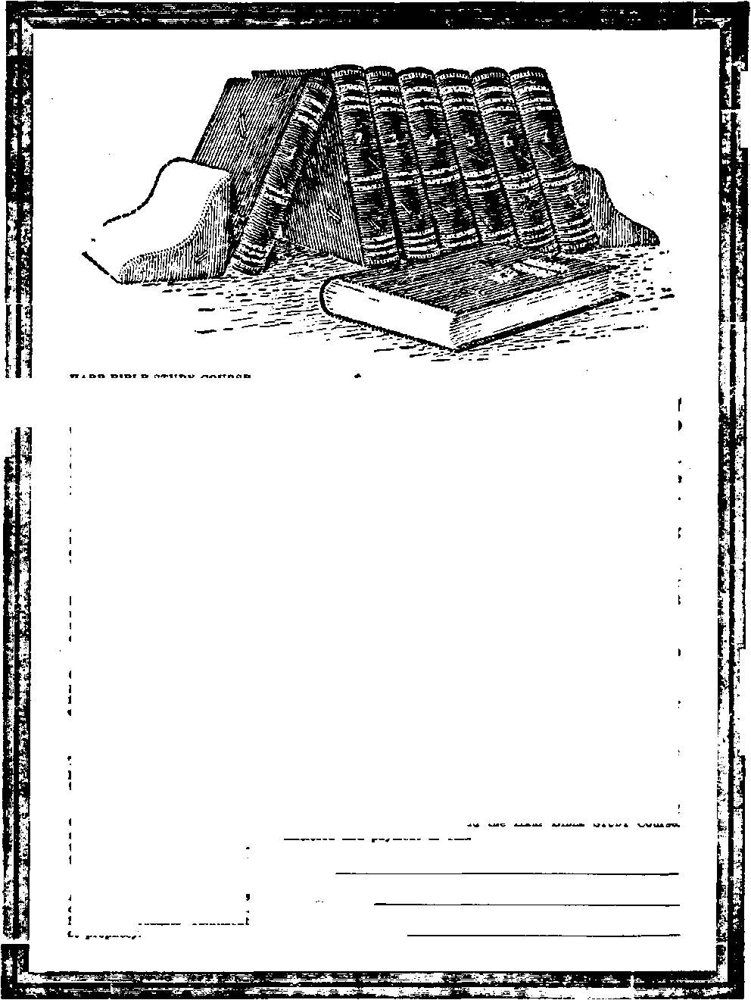

Social and Educational
Fourteen Points, an Echo or the Cedar Point Convention
Finance—Commerce—Transportation
Statistics of Manufactures...........
Elemental Social Philosophy ...........
Abolish Usubt.................
Political—Domestic and Foreign
Commissions a Curse......;......
Rewards of Heroism..............
Science and Invention
The Radio Telephone............
Sound Waves Made Audible........
Voice Speeds as Lightning.........
Astronomical Observations.........
Home and Health
The Emotions and Treto Control ....
The Power of Right Thinking......
Turning Grief into Joy........
Ration-wide Neurasthenia.......
Heart Beats Speeding Up ...... .
Travel and Miscellany
Reminiscences of an Old Sailor......
10
21
30
11
12
13
13
15
17
Religion and Philosophy
▲ 144-Word Remembrance to 144,000 Foreheads •
•‘The Rulers Take Counsel Together’*.....
Impotency of Churchianity.........
Not Following the Master.........
No More Ingersolls Needed.........
Heard in the Office (No. 10)........
Future Life and Evolution.........
Digging King Tut-ankh-amen Out of Hell . . .
Angels—Ancient and Modern........
Gospel, a Message for All.........
Studies in “The Harf of God”........
14
22
23
24
2U 26
29
31
Published every other Wednesday at 18 Concord Street, Brooklyn, N. T., U. 8. A., by WOODWORTH, HUDGXNGS & MARTIN
CoporMers end Proprietory Addrete: J8 Concord Street, Brooklyn, N. T., U. 8. A. CLAYTON J. WOODWORTH . . . Editor 'ROBERT J. MARTIN . Business Manager C. E. STEWART .... Assistant Editor WM. F. HUDG1NCS . • Sec’y and Treas.
Five Cents a Copt—11.00 a Tbaj Fobsigm Omcii: British.....
OMOdioa . • AwtaUoetoa . South A/rtoaa
i Maki Remittances to THE GOLDEN AGE 34 Craven Terrace, Lancaster Gate, London W. 2 ......38-40 Irwin Avenue, Toronto, Ontario ......495 Collins Street, Melbourne, Australia ......6 Leite Street, Cape Town, South Africa
Bntared as Ncond-clsm matt* at Brooklyn, N. X., under the Act of March 8. 1879
■——.. -i --—- —~-~~~^^g!g^gg-Me!g-gSS=CSS3CSSg»
Velume V Brooklyn, N. Y., Wednesday, October 10, 1923 N mm bar 100
An Echo of the Cedar Point Convention
ON SEPTEMBER 10,1922, the International Bible Students Association, at their general convention at Cedar Point, Ohio, passed certain resolutions, which were published in full in The Golden Age for October 11, 1922. The circulation of over ten million copies of the aforesaid resolutions in the United States alone seems to have made an impression; for now we find another assembly of Christian people Btyled the Christian Citizenship Conference of the National Reform Association passing other more-or-less-similar resolutions at their annual convention at Winona Lake, Indiana, July 7th, 1923.
We believe that a comparison of these resolutions will be of interest to our readers. For convenience we designate the one as the Citizenship Conference and the other as the Bible Students. As the Citizenship Conference resolutions were the last adopted we follow their order, merely noting that their resolutions were • Bent by cable or telegraph direct to President Harding, the King of England, the President of France, the President of Germany, the Kings of Italy, Belgium, Denmark, Sweden and Norway, the Premier of Russia, and the Governor General of Canada. There is no mention of cables to the Emperor of Japan, the Sultan of Turkey, or the Shah of Persia; and as we read the resolutions we can understand* why they were omitted.
« « *
1. <rAn address to the Rulers of the World."—Citi-aenship Conference.
The Bible Students were rather more bold. Not kowtowing too much to earthly rulers (for they think that the rulers have been kowtowed to already more than is for the best interests of humanity) their salutation was:
"We call upon the nations of earth, their rulers and leaders, and upon all ths clergymen of all the denominational churches of earth, their followers and allies, big business and big politicians, to bring forth their proof in justification of the position taken by them that they can establish peace and prosperity on earth and bring .happiness to the people; and their failing in thia, we call upon them to give ear io the testimony that wo offer as witnesses for the Lord, and then let them say whether or not our testimony is true”—Bible Student*.
* * * *
2. “Humanity is staggered by the possibilities of another world war."—Citizenship Conference.
Here again the Bible Students were more bold. They came out flatfootedly with the statement:
“Relying upon the Word of God and his providential dealings with mankind through Christ Jesus, we as his witnesses hold and testify as follows, to-wit: Thai the World War came in 1914 and was followed by great famines, pestilences and revolutions in various parts of the earth exactly as foretold by the Lord; that 1914 marked the legal ending of the old world and there Christ the rightful King took unto himself his power as king; that the Lord Jesus Christ is now present, invisible to man, and proceeding with the work of establishing his kingdom, for which kingdom he taught his followers to pray; and that there is now impending and about to fall upon the nations of earth, according to the words of Christ Jesus, a great time of 'tribulation such as was not since the beginning of the world to this time, as, nor over shall be again/ and it is this impending trouble that the rulers and mighty men of earth see coming”—Bible Students.
• • •
3. <fHome6 in every land over which the shadow of sacrificial death still hovers are saddened by the proa- . pect of still further heartbreak and suffering.”—Citizenship Conference.
The Bible Students are not pleased with the implication that those who die while they are engaged in obeying the commands of big business, big politicians, or big clergy are counted as dying in the same way and to the same end as Christ died; and hence their resolution:
"That during the World War the clergy of these various church denominations were disloyal to the Lord Jesus Christ in this, that they wrongfully united with big business and big politicians to further the World War; they preached men into the trenches and falsely and blasphemously told them that their death upon the battlefield would be counted as a part of the vicarious atonement of Jesus Christ"—Bible Students.
* * *
4. "The people in these lands have already given millions of their sons in the belief that their supreme sacrifice would make the world safe for democracy, create a high idealism which would make the world a fairer place in which to live and end war for all time. None of these hopes has been realized.”—Citizenship Conference.
The Bible Students gave expression to the same thought in their declarations:
"That the rulers of earth have frequently boasted that the World War was fought to make the world safe for democracy, which claim has proven to be a delusion and a snare; that the international conferences at Paris, Washington, Genoa and The Hague, participated in by the financiers and statesmen and approved by the denominational clergy of the world, held for the purpose, as announced, of establishing peace on earth, have failed to bring forth the desired result"—Bible Students.
• • •
5. “Men hate each other as intensely as ever. Chaos reigns in every human relationship. Economic and political conditions have sunk to low levels. Nations have been guilty of promoting selfish and ignoble loyalties. Efforts have been made to avert the disaster which is inevitable if present tendencies continue. Every such method for adjusting these difficulties has failed."— Citizenship Conference.
Again the Citizenship Conference is in agreement '"with the Bible Students; for the latter set forth in their resolutions:
"That all of the nations of earth are now in distress and perplexity, as the Lord foretold they would be at this time, and that the entire social and political structure is threatened with complete dissolution; and the leading statesmen and rulers of the earth being aware of this fact and of their inability to establish peace and prosperity are frantically calling upon the denominational churches to save the world from disaster; that it is the desire of all the nations and peoples of earth that they might dwell tn peace and enjoy life, liberty and happiness; that the people are being misled by those who are attempting to bring about this desire through international conferences and agreements in the form of the League of Nations and like compacts"—Bible Students.
6. “The time has come to try Christianity. It hai never failed in any field when given a fair chance, and civilization is entitled to every opportunity to free itself from its present predicament. There is an inescapable obligation on the part of every nation to make its contribution to consummate this desired end, even at great sacrifice to itself.”—Citizenship Conference. '
The Citizenship Conference sees that our civilization is not a Christian civilization but a pagan one, and therefore sees that what is needed in the earth is Christ’s kingdom, the substitution of a perfect government for the imperfect ones. This the Bible Students also see:
"We hold and declare that Messiah’s kingdom is the complete panacea for all the ills of humankind and will bring peace on earth and good will to men, the desire of all nations; that those who yield themselves willingly to his righteous reign now begun will be blessed with lasting peace, life, liberty and endless happiness"— Bible Students.
* * *
7. “The nations of the world must depart from selfish individualism and inhuman isolation.”—Citizenship Conference.
The Citizenship Conference, in spite of all past failures of leagues and compacts, is still in hopes that something can be gained by more leagues and compacts. But the Bible Students have no such hopes and say plainly:
"That all international conferences and all agreements or treaties resulting therefrom, including the League of Nations compact and all like compacts, must fail, because God has decreed it thus"—Bible Students.
* * *
8. “They should unite in creating new standards which are based upon the teachings oi Jesus. He must be acknowledged as the Supreme Arbiter in every national and international difficulty. Loyalty to Him should be the chief desire of the nations.”—Citizenship Conference.
The Citizenship Conference thinks that all the nations should unite upon the teachings of Jesus. But the Bible Students think it unlikely that the heathen nations of China, Persia, Turkey, and Japan would unite upon such a program, partly because they have such a poor opinion of the warlike and barbarous nations of Europe and America. Indeed, the Bible Students criticise the denominational clergy because they have
"repudiated the Lord and his kingdom and showed their disloyalty by voluntarily uniting themselves with Satan’s organization and boldly announcing to the world that the League of Nations u the ’political expression of
God's kingdom on earth,' which announcement to made by them was in utter disregard of the words of Jesus and the apostles/'—Bible Students.
* • *
9. “It should be recognized that nations are accountable to the same Christian principles as those which pertain to all Christian men and women as individuals, ttere is no double standard of morality and ethics, one for men and another for nations. There is only one morality, one honor, one righteousness. We believe that the State belongs to God and that He is the ultimate source of all civil and political authority.”—Citizenship Conference.
Although the Citizenship Conference has already tacitly admitted that none of the kingdoms of this world are Christian kingdoms, and although they must see that the rum and opium and tobacco and high finance and predatory nations in white collars are no more Christian than are Turkey, Persia, China, and Japan, yet they would like to think that, in some way, God is at the head of all these nations. The Bible Students do not so think, but give it as their opinion
“That all efforts of the denominational church organisations, their clergy, their leaders and their allies, to save and reestablish the order of things in the earth and to bring peace and prosperity must of necessity fail, because they do not constitute any part of the kingdom of Messiah/'—Bible Students.
♦ ♦ *
10. “We believe that the divine right of sovereignty and civil authority is vested in the nation, and that the nation is an intelligent moral entity which God holds responsible for the use of the sovereignty and authority which He has vested in it”—Citizenship Conference.
Here the Citizenship Conference places the divine right of sovereignty in the human family. God took that sovereignty away from Adam in the garden of Eden. It does not belong to the human family now; it belongs to “Him whose right it is.” (Ezekiel 21: 27) That one is Christ, the principal Sheep in the flock of God. Hence the Scriptures say of Him: “Unto thee shall it come, 0 thou Tower of the flock, even the first dominion.” (Micah 4:8) Meantime the Bible Students reiterate
“That Satan, long the god of this world, has deceived the statesmen, financiers and the clergy, by inducing them to believe that by international- agreement or .other combined efforts they can bring the desire of dll na-iions"—Bible Students.
. ♦ » »
11. “We believe that God's judgments can be averted only by national obedience to the laws of love and brotherhood and fair play, as taught by Jesus, and that such obedience will bring peace to the world, and a restoration of prosperity and happiness to all the peoples.”—Citizenship Conference.
The Citizenship Conference, although they admit the wretched condition of civilization, still think there is some chance that it may right itself. The Bible Students believe that “the jig is up,” and therefore
“further hold and testify that this is the day of God/s vengeance against Satan's empire visible and invisible; that the reestablishment of the old world or order is on impossibility; that the time is here for the establishment of the kingdom of God through Christ Jesus; and that all the powers and organisations that do not willingly submit to the righteous reign of the Lord will be d& strayed."—Bible Students.
• • •
12. “We further believe that civil rulers are His ministers as certainly as are the rulers of the church, and that those rulers are directly and immediately responsible to Him for their official conduct.”—Citizenship Conference.
The Citizenship Conference believes that the politicians are God's ministers as much as the clergy are; and with this the Bible Students would agree, but for different reasons. Just how much, we wonder, would the Citizenship Conference think that the Emperor of Japan is God’s minister, or the Shah of Persia, or the Sultan of Turkey. However, the Bible Students agree that if the politicians and the clergy, as well as the financiers and all the people, would become Christians something lould really be done. Hence their resolution:
“That if the politicians would faithfully represent the people, and big business would cease exploiting the people, and the clergy would tell the people the truth concerning God’s arrangement, and the people would cease from strife, the kingdom of Messiah would be established by him without further trouble or distress; but failing thus to do, greater trouble must shortly follow."—Bible Students.
* • •
13. “It is because nations and rulers have held themselves above all moral law, becoming a law unto themselves as far as their civil lives are concerned, that present-day world conditions have become so chaotic.” —Citizenship Conference.
This statement of the Citizenship Conference is undeniably true, and because it is true it justifies the resolution of the Bible Students:
“That all of the world's present organization constitutes the visible part of Satan's empire or organization. and that Satan’s empire must now fall before the forward march of the King of glory.”—Bibis Students.
The Resolution of the International Bible Students Association at Cedar Point, Ohio, September 10, 1922 was adopted at the conclusion of a week of Bible study attended by an average of- about 10,000 persons. There were perhaps twice the number at the session at which the Resolution was adopted. In its preamble it set forth that:
"The International Bible Students in convention assembled deem it a duty and privilege to send this message to the nations of earth. A.s a body of Christians consecrated to obey and follow our Lord and Savior Jesus Christ, we are opposed to engaging in war, revolution, anarchy, or violence in any form; and we are opposed to fraud and deception being practised upon the people by the misrepresentation of the Word of God or otherwise. We earnestly desire peace, prosperity and the blessing of the people with life, liberty and happiness; and we hold that the only means by which this can be accomplished is by and through the reign of Christ. In the light of the Word of God, and particularly of fulfilled prophecy, we submit the following as a true statement of the facts relating to present conditions"—Bible Students.
• • •
The concluding words of the Citizenship Conference resolutions were:
14. “Now, therefore, an assembly of 2,000 Christian men and women, coming from many parts of the United States and representing many different nationalities and practically every Protestant ecclesiastical organization in this country, as well as officially representing the Governors of twelve foreign States, who have been in session at Winona Lake, Indiana, U- S. A., for the period of a week to discuss these problems, unite in asking the rulers of these United States and of the world to join in setting up the kingdom of God on earth, acknowledging Jesus Christ Lord of lords and King of kings, so that justice and happiness and brotherhood and peace may prevail throughout the whole earth.”—Citizenship Conference.
The very fact that the Citizenship Conference unites in asking the rulers to set up Christs kingdom shows that it is not already set up; that the kingdoms which are in its place are not His kingdoms; and that they think He cannot set it up alone. The language in which their concluding paragraph is stated suggests that the Citizenship Conference had at least seen and profited by the concluding paragraph of the Bible Students' Resolution. It should be noted further that while the resolutions of the Citizenship Conference are addressed to the rulers, those of the Bible Students are addressed to the people.
"Therefore, we bring to the peoples of earth God’s message of good tidings contained in the Bible, his Word of truth, and we publish to them his message of peace and everlasting salvation, to-wii, that the King of glory, the Deliverer of man, is invisibly present and has begun his reign; that the old world, under the control of Satan, has ended and is being rapidly broken in pieces, to make way for the everlasting kingdom of righteousness now being set up, and that millions of people now living on earth, if obedient io the laws of that righteous kingdom, will continue to live and never die; and we call upon all nations, peoples, kindreds and tongues who love righteousness and hate iniquity io recognize and freely acknowledge that Jehovah is the only true God and that his belated Son Christ Jesus is King of kings and Lord of lords”—Bible Students.
HUMANLY speaking, there is no such thing as absolute self-control; that is, no human creature is able to so guide his or her thoughts as to be immune from emotions which, at different times, are awakened by improper impressions, evil suggestions or wrong thinking. Like raging waves of the sea, the wrong kind of emotions are dangerous and frequently cast up human wreckage upon the sands of Time.
Emotions are felt; therefore it might be said that feeling is emotion. Some individuals, due to a fine nervous system, natural or acquired, feel very deeply; and their emotions are easily awakened by causes which would probably have little or no effect upon a person whose nature is not so <fhigh strung."
It is necessary to classify emotions before much progress can be made toward their control. To emphasize the distinction, let us place the most important ones in pairs, or opposites, as far as possible: Love vs. Hate; Courage vs. Fear; Joy vs. Grief; Reverence vs. Disrespect or Irreverence, etc.
Every human being capable of intelligent feeling experiences one or more of these emotions; and, on account of ignorance, superstition and sin, the majority of men, women and children are controlled by their feelings, or emotions. Therefore they are unreliable in their judgment. At one time they may be fully dominated by a feeling of joy and quickly thereafter grief may overwhelm them. They may be courageous one moment; and the next, fear rob them of their courage. But these are able, if conditions are normal, to maintain a comparatively peaceful existence; nevertheless they are liable at any time to have their tranquility shattered by some unexpected event.
The criminally inclined are, of course, still more unfortunate. Some are completely at the mercy of wrong emotions. One is sometimes born a criminal, due to influences ever which he has no control; but more frequently one becomes a criminal through environment. Whether one is criminally inclined or not, he should seek the best environment possible which can reasonably be his. Real criminals are, of course, controlled by destructive emotions, such as hate, fear, etc., and should be deprived of their liberty until they can be reformed, if this is possible in any case. There are some, however, who for a time are branded as criminals who are not criminally inclined at all, but are influenced by good, benevolent emotions. These have been imprisoned through misuse of power by those who are temporarily under the influence of, or are controlled by, emotions which are degrading and destructive. These conditions should automatically adjust themselves when the majority of the people regain their normal condition; but sometimes the wrong must be brought to their attention before it is rectified. These outrages against justice would never occur if each individual sought to control his emotions and bring himself more under the power of those which are good. Love is the king of all emotions.
THERE are people, however, who have more of the “spirit of a sound mind” than the mass of humanity, because they study the effect of the emotions and strive for self-mastery. They do not have perfect self-control, however, because that is impossible at this time. These few have access to the Fountain-head of all that is good—the great Creator. This sweet relationship they gained through full surrender of self to God and His service, and His subsequent acceptance of them as His children through Christ. Under the Messianic reign of one thousand years, this class, having in this life sought to control their emotions for good, will, with the Prince of Peace, teach the people of the earth perfect self-control.
Three important ways in which emotions are aroused are:
(1) By impressions received through the senses—sight, smell, taste, hearing and touch;
(2) Suggestions caused by one's condition of health and by evil spirits;
(3) By extended thought on any subject
If the ordinary, normal person sees some beautiful object, smells some sweet odor, tastes a delicious dish, hears enchanting music, or touches something soft and velvety, an emotion of pleasure results—it may be of joy, peace, admiration or some other like feeling. On the other hand, should one see a murder committed, hear the groans of the dying victim, and touch the corpse, a feeling of horror or of fear will be the result
A suggestion of suicide may enter the mind because of ill health; or, if one is strong and robust, the very condition of splendid health suggests the desire to live and continue to enjoy life’s good things. An evil desire lurking in some dark recess of our being, let in by habit, may clamor for recognition. Mental impressions received from evil spirits, or demons, often arouse violent emotions which may lead to rash acts, even to murder, theft, and gross immoralities. For these suggestions and impressions, however, one may not be wholly responsible and, consequently, will not be held accountable for them to the extent of accountability incurred due to deliberate thought along any given line.
XTENDED thought and meditation can be powerful for either good or evil; for "as a man thinketh ... so is he ” Suggestions alone may not leave their mark upon our brain cells, but deep thought to a conclusion is indelibly impressed. Reasoning or connected thought upon some noble, pure, lovely or just subject brings a wealth of good emotions and legitimate pleasure and is conducive to mental and physical health, as well as moral fibre, or sterling character development. The same amount of thought given to a hateful, irreverent, immoral or fearful subject produces the opposite effect and will lead one finally to manifest despicable characteristics.
Impressions and suggestions received by the mind cause emotions great or slight, and are either disposed of by dismissal or else manufactured into thoughts. Thought is a product of the mind. Deliberate actions result from thought. Since the mind has to do with suggestions, impressions, emotions, and thought, then an effort to control one’s mind seems to be the simplest and most effective way to dominate our emotions and bring our thoughts into captivity. This cannot be done without will power, neither can it be done by the will alone. None should be discouraged, however, because of weakness of will; for the will can be strengthened by proper mental exercise, aided by physical recreation. To be truly wise in the battle for self-mastery, one must seek divine aid; for "the reverence of the Lord is the beginning of wisdom.”
To be successful in emotion and thought control, one must be a diplomat; and this requires considerable training in the school of experience. If the basis for thought is not pleasant, or is degrading, change the subject. It is a self-evident truth that one cannot think of two subjects at the same time; therefore be diplomatic in the disposition of your thoughts and emotions. To try by sheer will-power to cast out of mind an unwelcome suggestion or thought may lead to nervous exhaustion, especially in the case of one who is excitable or very impressionable. Therefore the best and most economical way to combat these evils (speaking of nerves) is to think on some different subject that will be helpful. If you thus continue to think on an uplifting subject, the evil effects of an improper thought can be erased.
Suppose you are out in an auto or are streetcar riding, and you pass by the stock-yards and rendering-plant of some packing house. You are greeted by a nauseating smell of dead animal matter,' skins, etc. Immediately you begin to think of the thousands of animals slain daily, of their suffering, and of the offensive odor. Divert your attention from the stock-yards by thinking of the near future, when such sights and smells will not exist, and when the packers will seek more beneficial service for mankind.
In thus dwelling upon the absence of all distasteful things in the Golden Age you will counteract the emotion of disgust and the discomfort caused by such sights and smells.
IF YOU are an employe in some office building or elsewhere, and are “called down” on account of being late at the office or because of some mistake you have made, do not allow the emotion of anger or of grief or of discouragement aroused by the sharp rebuke to overwhelm you. Just take your medicine calmly, and resolve to increase your efficiency by doing better next time, thereby turning damaging emotions into channels running to good, happifying thoughts. Should you be an employer, and your stenographer insists on doing “sloppy” work and you are tempted to anger, rather than ruin the day by arousing emotions which make you miserable think of the beautiful day, or of the fine breakfast you have just eaten, or of the romp with the kiddies you expect to have tonight. Last, but not least, try to think of some kindly suggestion given in an altogether different way than usual which your stenographer will appreciate; and thus kill the bad emotion with some cheerful thought of helpfulness. Put this into practice at once.
Should you be caught with a vacant, inactive mind, and some vile suggestion is impressed upon your brain, and you are neither able to throw it off quickly by will-power alone, nor to “change the subject” successfully, pick up a good book and occupy your mind in reading until no trace of the evil suggestion or emotion remains. Do not be inactive mentally, or allow blankness of mind, if you value your physical and mental health. Rest the mind at night when you are asleep. Keep the mind alert and engaged in constructive thought, and be active physically. Thus many evil suggestions, and the consequent harmful emotions, will be avoided. Truly it has been said: “An idle brain is the devil's workshop.” Activity of the right sort tends toward life, while inactivity leads to death.
If conversation in company with others is not elevating, or is destructive of another’s good name, diplomatically change the line of talk to different channels and seek to dominate the conversation until the wrong suggestions have succumbed to good thoughts. The Good Book says: “Be not overcome of evil, but overcome evil with good.” An active mind in good things leads to purity of conduct and eternal life in the Golden Age, now breaking in impressive dawn upon a much befuddled and shattered race.
Something should be said about fear. Fear is an emotion which causes much needless suffering. Fear, when entertained, will benumb otherwise keen faculties and render them useless. By cultivating a kindly sentiment toward Mothers and forgetting self, the “fear of man, which bringeth a snare,” will daily lessen its grip upon you. Dread is a form of fear brought about by various tilings, some of which are unpleasant environment, timidity, poverty, and inefficiency. Fear of losing one’s position will frequently rob life of its sweetness. Fear of death often torments, fear of old age with its dependence will make one frantic. But all of these, and many other fears, only serve to lessen one’s efficiency and hasten the very thing dreaded. To counteract these fears permanently, it is necessary for one to gain a knowledge of God’s plan for the righting of every ill in the near future. This can be successfully done by the perusal of proper books, including the Bible. This knowledge is becoming daily more necessary as the race is further embroiled in a tangled mass of wars, revolutions, peace conferences and Bolshevism.
rpiIE curse of commissions, boards, and industrial courts is receiving some deserved notice in a friendly press. And the way these fellows work the people is truly a cause of anxiety.
Here is how the gas commission worked it in Oklahoma. Three raises were granted the distributing company in the zinc fields in rapid succession. From fifty cents per thousand feet, the price was raised to sixty-three cents; and before they had collected at this rate it was raised to seventy-three cents. This was collected once, and then the price was boosted to two dollars for the first thousand, and fifty cents for each additional thousand.
Thus the people are at the mercy of these sharks that have been appointed on commissions. It is said that there are over four hundred of these commissions at Washington, constituting an “invisible” administration that the people cannot reach. These commissions are the creatures of big business. Nobody is ever able to get to the man behind the commission.
THE following item, from the Toledo Union
Leader, shows how cheap human life has become, and how rapid the decline in the estimated value of heroism and super-patriotism. It seems the very fulfilment of the words of the wise man: “All is vanity.” There is a scripture which seems to have some bearing upon this matter. For is it not written: “I will take away the pride of their tinkling ornaments in that day”! The item reads:
"New York.—Four years ago the victory medals conferred on American soldiers for conspicuous bravery in the war were priceless. A year ago some of these decorations were found in the possession of men who never were under fire. They could not be bought nor sold— oh, no— but if you asked about them in some of the local pawn-shops, you were likely to be met with a request, in a low voice, about the particular sort of ‘deal’ you were interested in. Ten dollars, you were likely to have been told, would bring you, for instance, a badge with three bars, St. Mihiel, Meuse, Argonne, Defensive Sector, across a ribbon above the figure of the bronze Victory on the medal. Now you can buy •uch a medal in pawn-shops for $3.75. The ruling price is $2 for the medal, with $1.75 added for the extra bars. And they are sold openly. Where did the pawn-shops get them? From ex-service men who were jobless and hungry, and in many instances whose families were hungry.”
Ere long the badge of true courage will be seen to be upon the objectors who had the stamina to brave popular hatred. We read of some such: “They shall be mine ... in that day when I make up my jewels.”
It is chronicled in Scottish history that Romanism once sought recantment of two lassies of the heather, by placing one to a stake for the ocean tide to drown gradually, while the younger was fixed to a similar stake farther back. Both were continually asked to believe in the mass, as the tide gradually rose higher and higher. When no response came to thia devilishness, their tormentors dashed the heads of their victims forward into the overwhelming sea; and thus they finished their testimony of Jesus. Many are the heroes of faith whom the future will shortly reveal with glory undimmed and eternal in luster.
THE statistics of manufactures for the Thirteenth Census have been published in a volume O of 1,698 large pages bristling with facts and figures. For the convenience of our readers we have examined the volume and give the names of all cities which had a value of over $100,000,000 in manufactured products for the year 1919:
|
CITY |
value OF PRODUCT |
PRINCIPAL LINES 07 MANUFACTURE |
|
New York |
$5,260,707,577 |
Clothing, printing, meat, millinery, furs, tobacco, bread. |
|
Chicago |
8,657,424,471 |
Clothing, machinery, printing, bread, cars, confectionery. |
|
Philadelphia |
1,996,481,074 |
Sugar, machinery, leather, textiles, printing, clothing. |
|
Detroit |
1,234,519,842 |
Automobiles, machinery, meat, brass, engines, bread, printing. |
|
Cleveland |
1,091,577,490 |
Machinery, automobiles, meat, electrical apparatus, stoves. |
|
St Louis |
871,700,438 |
Meat, shoes, tobacco, machinery, bags, ' coffee, clothing. |
|
Baltimore |
677,878,492 |
Clothing, meat, fertilizers, tinware, bread, confectionery. |
|
Buffalo |
634,409,733 |
Flour, meat, machinery, iron and steel, bread, food, soap. |
|
Pittsburgh |
614,726,978 |
Iron and steel, meat, bread, pickles, cars. |
|
Newark |
577,608,564 |
Leather, electrical apparatus, jewelry, machinery, chemicals. |
|
Milwaukee |
176,161,312 |
Leather, meat, machinery, engines, shoes, knit goods. |
|
Akron |
558,962,067 |
Rubber. |
|
Cincinnati |
500,040,996 |
Meat, machinery, clothing, shoes. |
|
Minneapolis |
491,382,975 |
Flour, linseed oil, cars, bread, machinery, ironwork. |
|
Kansas City, Kans. 468,686,423 |
Meat, flour. | |
|
452,236,634 |
Meat, butter, flour, bread. | |
|
San Francisco |
417,321,277 |
Ships, meat, coffee, automobiles. |
|
Indianapolis |
398,666,553 |
Meat, automobiles, machinery, flour. |
|
Jersey City |
- 374,182,924 |
Meat, bread, machinery, tobacco. |
|
Rochester |
351,416,379 |
Clothing, shoes, machinery, electrical apparatus, optical goods. |
|
Toledo |
293,520,900 |
Machinery, electrical apparatus, flour. |
|
Flint |
275,779,638 |
Automobiles. |
|
Seattle |
274,431,239 |
Flour, meat, machinery, lumber, ships. Textiles, jewelry, machinery, dyeing. |
|
Providence |
267,629,283 | |
|
Bayonne |
260,602,109 |
Chemicals. |
|
Youngstown |
241,458,370 |
Iron and Steel. |
|
Perth Amboy |
230,658,263 |
Chemicals, fire brick. |
|
Camden |
218,165,277 |
Leather, Phonographs. |
|
Paterson |
216,659,174 |
Silk, dyeing, shirts. |
|
New Bedford |
210,773,312 |
Textiles. |
|
Worcester |
208,705,773 |
Machinery, shoes. |
|
Bridgeport |
208,089,797 |
Machinery, corsets, electrical apparatus, brass. |
|
Louisville |
204,565,727 |
Tobacco, cars, meat, pickles. |
|
Winston-Salem |
200,484,834 |
Tobacco. |
|
Portland, Ore. |
196,380,146 |
Flour, machinery, lumber, ships, bread* |
|
October 10, 1923 |
GOLDEN AGE |
11 | |||
|
Kansas City, Mo. |
192,815,052 |
Bread, printing, |
’ New Haven |
125,455,547 |
Hardware, corsets. |
|
butter, flour, coffee, |
Denver |
125.411,270 |
Meat. | ||
|
clothing. |
Canton |
124,292,924 |
Itou and steel. | ||
|
Columbus |
184,021,849 |
Machinery, cars, shoes. |
Trenton |
122,477,987 |
Rubber, pottery, wire. |
|
Lawrence |
183,449,096 |
Textiles. |
Racine |
120,027,399 |
Agricultural imple- |
|
New Orleans |
182,798,561 |
Bags, rice, foods. |
ments. | ||
|
Dayton |
174,990,607 |
Machinery. |
Wilmington, Del. |
121,039,617 |
Explosives, machinery, |
|
Fall River |
163,246,082 |
Textiles. |
cars. | ||
|
Lynn |
160,905,792 |
Shoes, electrical |
Hartford |
118.002,693 |
Machinery. |
|
machinery, leather. |
Brockton |
117,855,025 |
Shots. | ||
|
Richmond Syracuse |
156,724,322 150,091^78 |
Tobacco. Automobiles, |
Memphis |
117,717,829 |
Cottonseed oil, foods, cars. Textiles, shoes. |
|
St. Paul |
149,638,290 |
machinery. Machinery, butter, |
Manchester |
117,493,082 | |
|
cars, shoes, flour, furs. |
Lorain |
116,908,616 |
Iron and steel. | ||
|
Sioux City |
146,393,134 |
Meat. |
Atlanta |
113,991,946 |
Cottonseed oil, food, |
|
Reading |
141,560.831 |
Iron and steel, knit |
confectionery. | ||
|
goods. |
Grand Rapids |
109,135,055 |
Furniture. | ||
|
Yonkers |
140,016,561 |
Bags, carpets, sugar. |
Schenectady |
106,531,182 |
Electrical machinery, |
|
Lowell |
137,801,538 |
Textiles, machinery. |
locomotives. | ||
|
Pawtucket |
135.517,533 |
Machinery, textiles. |
McKeesport |
105,058,713 |
Iron and Steel. |
|
X’assaic |
129,073,484 |
Textiles. |
Pontiac |
104,990,133 |
Automobiles. |
|
Cambridge |
127,864,901 |
Automobiles, belting, |
Lansing |
104,722,115 |
Automobiles. |
|
shoes, confectionery. |
Kenosha |
103,725,717 |
Automobiles. ‘ | ||
|
Birmingham |
127,214,048 |
Iron and steel. |
Tacoma |
103,171,756 |
Flour, lumber. - |
The Radio Telephone By Ralph H. Leffler
THE subject of radio is one which has claimed the attention of many people, especially so during the past year since the advent of radio telephony.
That it is possible to transmit the human voice, or any form of sound wave, from one station to another separated by hundreds of miles and without any visible means of communication, seems almost uncanny to many people. Yet it is no more mysterious than many other phenomena in nature which occur all about us daily, and which have ceased to be mysterious and wondrous because they have become common to us.
Every day the sun will rise, shedding his beams of light abroad over every living thing upon the earth. What is light and by what mechanism are the rays carried over the millions of miles of space intervening between the sun and the earth? Again, if we place some object upon a support, and then remove the support from under it, the object will move towards the earth; or we say it will fall. What causes it to fall? You say, Gravitation. But what is gravitation? We have seen these phenomena so often that we cease to wonder about them. Yet they are miracles, and just as much so as radio.
Many theories have been advanced purporting to explain how light is transmitted from one place to another, and how transmission of electro-magnetic waves without the use of interconnecting wires, as in radio telegraphy, is accomplished. But as to which of these theories is true, if any, time alone will tell. The one generally accepted by scientists at the present time is known as the ‘‘ether” theory; that is, an imponderable substance of some kind, known as ether, fills dll space and is the medium by which light and the electro-magnetic waves as used in radio are transmitted, just as water is the medium for the transmission of waves over the surface, and as air is the medium for the transmission of sound waves.
It was back in the 80’s that Hertz of Ger* many first discovered the possibility of setting up in the ether electrical disturbances which would travel out in all directions to a great distance. He used an induction coil to produce a high potential, and an oscillator consisting of two horizontal wires with a plate of zinc at each end. The zinc acted as the plates of a con-
denser. When they were charged by the indue- greatly different in other respects. They are tion coil, powerful electric oscillations were set evacuated to a much higher degree; and they
up in the horizontal wires connecting the plates.
These electric oscillations set up in the ether electro-magnetic waves or disturbances which were found to travel out in all directions and to a great distance. The action is analogous to the ripples that are set up in a pond of water when a pebble is cast into it. The ripples travel out in all directions on the surface of the water, in the shape of concentric rings from the starting point where the pebble dropped into the water. The only difference between these water waves and the electric waves set up bjj Hertz’s oscillator, is that in the case, of the pond of water the waves are material, can be seen, and travel only on a plane consisting of the surface of the water; while in the case of the electric waves, they cannot be seen, and they travel in all directions as from the center of a sphere, instead of in one plane as from the center of a circle.
AFTER it was once known how to create electrical disturbances in the ether, then in order to use them for purposes of communication it was necessary to know how to detect and intercept those disturbances and to transform them in such a way as to make them audible to the human ear. To accomplish that end required the effort and patient research of many inventors; such as DeForest, Zenneck, Marconi, Armstrong, Fleming, and others. Many sensitive devices to detect these electric waves in the ether have been developed.
It is largely due to these sensitive detecting devices of the present time that radio telegraphy and radio telephony are possible. The simplest of these is known as the galena detector. It consists of nothing more than a small copper wire making a point contact on a piece of galena, a mineral. This device has the property of transforming the high frequency electric waves to a lower frequency, so that they can be heard by the human ear.
The most sensitive detector in use at the present time is generally known as a "vacuum tube.” It has many other names, such as radio-tron, audion, triode, and electron relay. These vacuum tubes resemble an ordinary ten-watt electric incandescent lamp, in that they have a glass bulb and a small filament. But they are have two other elements, a plate and a grid, . 1 which play a very important role in the reception of electro-magnetic waves. When these vacuum tubes are used as detectors of electrio waves, their function is exactly the same as the simple galena detector, but of course many times more sensitive.
In order to transmit the human voice by radio, it is necessary first to have a transmitting station that is capable of producing power- । ful disturbances in the ether in the form of electric waves. These waves must be continuous and must have a high frequency, that is, must follow each other in rapid succession.
When these waves are used for telegraphing, they need not be continuous but may be broken up into groups for signaling. The frequency of the electric waves used by broadcasting stations at the present time, working on 350 meters, is 857,000 per second, which is far above audibility and much higher than any frequency found in the voice wave. This high-frequency electric wave is technically known as the "carrier wave." It is used to carry the voice frequency wave which is impressed upon it. This carrier wave can be produced by several different methods; by a high-frequency alternator, by a D. C. arc, or by large, high power vacuum tubes. The latter method is used by practically all broadcasting stations at the present time. These power tubes are being rapidly developed so that in the near future they will be used to replace the elaborate and bulky machinery in use by the high-powered trans-oceanic stations.
The voice musta next, be impressed upon this f carrier wave. This is done by speaking into an ordinary telephone microphone transmitter. This transmitter changes the sound waves into electric waves, which are then passed through several stages of amplification, then through a ; speech amplifier, and finally through special -modulating devices which serve to impress every minute variation of the voice upon the oscillators and the carrier wave. This modulated carrier wave then radiates but into space in all directions, and carries with it a faithful reproduction of the speaker’s voice—every tonal *
variation, the overtones or harmonies, and all the complexity of wave shapes and frequencies represented in that voice.
HE voice has been given the wings of flight, and it now flies in all directions with the speed of light, or around the earth more than seven times a second! Truly wonderfull
The prophet Job was given a glimpse of this very thing when the Lord said to him: “Canst thou send lightnings, that they may go, and say unto thee, Here we are?” (Job 38:35) Undoubtedly the Lord had reference to the radiophone, which we see before our very eyes today.
Before the listener at the receiving station many miles away can hear the speaker at the transmitting station, it is necessary for him to bring his receiving set into tune with the transmitting station. The action is analogous to the production of sympathetic vibrations in a tuning-fork. If a tuning-fork is set into vibration and if a second fork is brought into the field of the first, this second fork will start to vibrate sympathetically when and only when the second has the same natural vibrating frequency as the first; that is, when it is in tune with the first. Likewise, in order for a radio receiving station to hear a transmitting station, it must be so adjusted that its electrical vibrating period will be the same as that of the transmitting station. .
This electrical adjustment is called “tuning.” It explains why several radio stations may be transmitting at the same time, each using a different frequency from the others, and only one can be heard at a time—the one with which the receiving station is in tune.
Occasionally it happens that two stations will be working on nearly the same wave length; that is, at nearly the same frequency. When this'occurs, these two stations will interfere with each other, and neither one can be understood. It is for the purpose of preventing just such, interference that the United States Government has required all transmitting stations to obtain licenses and to transmit on certain designated wave lengths only.
When the operator of a receiving station has his set in tune with the carrier wave from the broadcasting station, he then may 'listen in” and hear every syllable and word that may be spoken into the microphone at the transmitting station. Or he may listen to an orchestra and hear every tone that is produced by the musical instruments, as well as he could if he were in the same room.
Such are the wonders of radio telephony! What radio holds forth for the future, can only be imagined. The possibilities are infinite. When it is written that in the Golden Age the law shall go forth from Jerusalem, it is certain that radio will play an important part in the fulfilment of that prophecy.—Isaiah 2:3.
ACCORDING to the press, they have discovered a new star cluster, indicating for the known universe a diameter of 2,100,000,000,000,000,000 miles. Known by whom? Why, by us.
And that is the amusing part of it. Who are we? Mighty small fry; so small that I doubt our capacity ever to discover or comprehend anything except other small fry. An ant might get some idea of the cupola of one of the hotels at the foot of Pike’s Peak. But you know that an ant will never discover the whole Rocky Mountain range; and even if it did, it would only be starting to learn. So with us. I cannot get much exercised over our discovery of a new huge star. Any star we discover must be nothing more than a speck, relatively, in the great scheme of things. I am afraid that if we puny little creatures, with our weak little instruments, can “know” a universe 2,100,000,000,000,000,000 miles wide, the whole thing must be an infinitesimally small part of the main show. In other words, all of these discoveries just emphasize our own unimportance and comparative tininess.
Here we are, on a globe which, if the whole thing went up in smoke some night (but it will not), would not make a blaze that would look like a fire-alarm fire from the distance of Venus, the nearest planet. It would hardly be observed as far away as our sun; and that is a very short distance—only some 92,000,000 miles. Why, they have discovered one star, Betelguese, the diameter of which is three times the whole distance between us and the sun! Just stop and take that in. A star nearly 300,000,000 miles in diameter! Yet I contend that Betelguese must be relatively a peanut—if we Ettle creatures can measure it.
We human beings and our discoveries must be about like potato bugs and their discoveries. I imagine that a hundred years ago the potato bugs may have had a convention and exhibited a wonderful new telescope. Can you not see them all crowded together out there in the garden, with old Doctor Ten-Legs giving a demonstration of the powerful new instrument? "Gather around, boys, and take a look. Marvel of marvels!” What they see is the haystack in the back pasture. It is 21,000,000 potato-bug miles away. No such distance was ever dreamed of before.
A century passes. Again the potato bugs gather to witness the stupendous wonder of the ages, an instrument of such incredible power that through it they can see a distance of 47,000,000,000 potato-bug miles. The bugs draw near; and Professor Stripe-Back Crawl, Ph. D., the demonstrator of the new telescope, shows them the greatest discovery of all time. The bugs take a look and gasp in amazement; for through the telescope they have looked millions of potato-bug miles past the haystack—and discovered the bam on the next farm! Think of it—the bam! Probably within the next fifty years they will have discovered the town clock across the valley.
So do not get excited over what we have discovered of the universe. Probably all that we have seen is the haystack in the back pasture. Do not stick out your chest and proclaim loudly the “great” discoveries of “great” scientists; for, like the potato bugs, ’twill not be long before our present discoveries will seem insignificant. Soon the long-looked-for Golden Age will shed its light abroad; and then, when the knowledge of the Lord shall cover the earth as the waters cover the deep, we shall look back upon our “wonderful discoveries” as upon the work of a child.
By Charles Henry East
Foreheads
Marked with the marks
Of confusion;
Scarred with scarlet letters;
Being bound with fetters Of earth and Christendom.
Spherical forms of bone
And withered skin, *
Seared by the flames Of creeds and sin.
Foreheads
That speak of lust
Untold.
Foreheads
That in disgust Tell of AGONY THEY HOLD.
Pale, wrinkled, thoughtlessly
Marked with fear,
At “all nations marching to Armageddon,*
At the time now here; .
Women of error, Men in fear!
(Revelation 17:5; 19:15; 14:9,10; 13:16; 9:4)
Foreheads
Marked with the marks
Of sonship;
Sealed with sacred letters;
Free from myriad fetters Of earth and christendom.
Shining forms of bone And glistening skin, Brightened by the flames That bum therein.
Foreheads
That speak of truth Now told.
Foreheads
That in their youth
Tell the message they hold.
Lustrous, shining, thoughtfully ;
Marked with cheer,.
At the TRUTH THEY POSSESS, At the time now here ;
Brothers in truth, Sisters of cheer. •
(Rev. 14:1; 9:4; 7:3; 20:4; 22:4; EccL 8:1J
Nation-Wide Neurasthenia By Dr. Melville J. Eames (Chiropractor)
to be a very simple thing, the smallest partide of matter in existence. But now they find that it is much more complex, in reality being a complete system in itself, consisting of a central nucleus with smaller particles or electrons revolving about it Any rise in temperature increases the rate of vibration of these electrons, thereby changing the condition of ths substance, just as water is changed into the gaseous state, steam.
To my mind this is an excellent illustration of modern civilization. Not long ago it seemed to be a more or less simple unit, like the atom; but now it is seen to consist of many parts revolving about it, just like the electrons, the whole comprising a complex system of its own. And not only that, but we see the heat of selfishness so applied, and the rate of vibration of its parts becoming so rapid, that its substance also seems liable to be converted into the gaseous state soon or in common phrase to "go up in smoke.”
The above condition has been recognized for some time and frequently commented upon by writers of prominence; but there seems to be a complication arising which is not so well understood. It is already being recognized as a dangerous condition; but its cause and remedy have not been found by those who are well informed on this simpler disease—“American neurasthenia.”
Readers of The Golden Age are now to be favored with a clear understanding of this new condition, while readers of many of the world’s greatest newspapers and magazines are receiving no real enlightenment, nothing but the confused and ever-changing ideas and hopes of the world’s statesmen, trying to remedy something of which they know not the cause.
Heart Beats Speeding Up
THE following news item from the Birmingham Age-Herald will probably be better understood and appreciated by the readers of The Golden Age than by the readers of the paper in which it originally appeared.
“Men’s Hearts Beat Faster Than They Did, States Physician. ■
“The general uneasiness of the period is reflected in the very hearts of men. At least the observations of Dr. W. W. Clapp, veteran Birmingham physician, who is the United States pension examiner for this district, point to that conclusion. _
NEURASTHENIA has been called “the disease of the American people.” It is a byproduct of this “brain and gold age,” or a result of the modern civilization of which this nation is so proud.
To be sure, the American people have many things of which they can justly be proud when compared with other nations of the earth. But our present system of civilization, a very complex one, contains many things which do not call forth the spirit of pride from even the “reddest-blooded Americans.”
There was a time when everything American was “the best” in the eyes of millions; but that was before the epidemic of neurasthenia and also, no doubt, “before the war,” when civilization was not so “modern”; that is, things were not done on such a large scale nor at such a rate of speed as they are today. With the increase of knowledge coming at the dawn of the new dispensation, all things began to expand; for “knowledge puffeth up,” and everybody and everything had to speed up to the limit, yes, even exceed the speed limit, in order to keep up with the expansion.
Now history shows that the American people have been a people of “nerve.” The most trying experiences through which they passed in the development of this country have served but to strengthen their “nerve.” But now something is arising which seems to be changing the “nerve” of the American people into "nerves,” the layman’s way of saying neurasthenia.
Civilization, with all its component parts, some more, some less to blame, is the cause of this disease. The nerves of the people have not stood the excess of speed. Selfishness in most cases has been the power which developed such speed. Love of money, pleasure, and fame are the parts of this complex system mostly to be blamed. The pursuit of these has exhausted our nerves until today we are styled “a nation of dyspeptics.” Our nerves are on edge'and are continually crying for more speed to satisfy their craving.
This is not a pessimist’s view by any means. It is merely the view of many sober-minded people who have slowed down enough to catch a glimpse of the scenery as they go by.
Of late, scientists have been speaking a great deal about the atom, which was once supposed
u
"Tlen'a hearts beat faster than they once did,' he •ays. 'There was a time/ Dr. Clapp declared, 'when the normal heart beat ranged from sixty-five to seventy-five, but now/ he continued, 'the average ranges ten beats to the minute faster and sometimes more/ He ■aid it was not unusual to find a man with a pulse beat of around ninety in comparatively good health. The pulse rate of most men now ranges from seventy-five to eighty-five, Dr. Clapp asserted. Dr. Clapp offered no explanation of this speeding up of men's hearts other than to attribute it to the general uneasiness of the period,” '
I believe Dr. Clapp's explanation of his observations is a good one; but almost any reader of The Golden Age could elaborate on this cause just a little, so that it could be better appreciated by the readers of the Birmingham Age-Herald and by Dr. Clapp himself.
I am naturally interested in viewing current events in the light of Bible prophecy; and so this statement regarding the general uneasiness of this period brings to my mind the words of One who also was a very close observer of human affairs, Jesus Christ.
Probably those who read this article in their morning paper did not know that “the period*' of which Dr. Clapp spoke was the same as that spoken of by Jesus in Luke 21: 25-28; namely, the closing days of the Gospel age and the beginning of the Golden age, better known as the Millennial age. Jesus had been observing carefully the conditions that existed at that time; and He was very plain and to the point regarding the things of which He disapproved. In this instance His remark about the destruction of the temple brought forth the question, ‘•'When shall these things be!” and as recorded in Matthew 24:3, “What shall be the sign of thy presence, and of the end of the world (age] 1”
In answering their question Jesus said: “And upon the earth distress of nations with perplexity; the sea and the waves roaring; men’s hearts failing them for fear, and for looking after those things which are coming on the earth; for the powers of heaven shall be shaken.”—Luke 21: 25, 26.
These words, “men’s hearts failing them for fear,” carry the same thought as the words of Dr. Clapp: “Men’s hearts beat faster than they did.” The only difference is that Dr. Clapp states the fulfilment of Jesus' prophecy.
BfeOOKLYW, W. Xa
IS THERE any one who has not experienced what fear will do to the heart! I believe that every one has at some time or other had his heart quickened by fear, and not only his heart, but probably the fear was manifested in his knees. While Dr. Clapp makes no mention of the condition of men’s knees at the present time, any lack of observation on his part, or ' that of any other examining physician, is more than compensated for by the foresight of the prophet Ezekiel: “All hands shall be feeble, and all knees shall be weak as water.” (Ezekiel 7:17) Further on in his prophecy (21: 6,7) he states the reason: “Sigh, therefore, thou son of man, . . . and it shall be when they say unto thee, Wherefore sighest thou! that thou shalt answer, For the tidings, because it cometh: and every heart shall melt, and all hands shall be feeble, and every spirit shall faint, and all knees shall be weak as water: behold, it cometh, and shall be brought to pass, saith the Lord God.”
It is quite evident that the Prophet is referring to something which will cause great fear. Just what does he mean by the words, “Behold, it cometh”! He is referring to the same condition which Jesus said would cause men’s hearts to fail them for fear. It is the same condition recognized by Dr. Clapp when he says: “This speeding up of men’s hearts is due to the general uneasiness of the period.”
This condition is far more serious than the neurasthenia resulting from the speed of modern civilization. It is not just an “American neurasthenia”; it is world-wide neurasthenia, and does much more than make a “nation of dyspeptics.” It is making nations with “failing and melting hearts,” “feeble spirits,” "feeble hands,” and “knees as weak as water.” Nations, are made up of people; and when all knees become “weak as water,” it would seem that the nations could not stand much longer.
What an awful calamity! What can this all mean! Listen to the words of the prophet Isaiah, as he speaks of the same condition: “Strengthen ye the weak hands, and confirm the feeble knees. Say to them that are of a fearful heart, Be strong, fear not: behold, your God will come with vengeance, even God with a recompense; he will come and save you. Then the eyes of the blind shall be opened, and the ears of the deaf shall be unstopped. . . . And the ransomed of the Lord shall return, and come to Zion with songs, and everlasting joy upon their heads: they shall obtain joy and gladness, and sorrow and sighing shall flee away.”—Isaiah 35:3-10.
Oh! is that what it meansT Yes, thank God, that is just what it means. How it pays to let one scripture interpret another! Surely, "God is his own interpreter, and He will make it plain.”
This "distress of nations with perplexity, men’s hearts failing them for fear,” these "feeble hands and weak knees,” all of this, and much more; the obtaining of joy and gladness and the fleeing away of sorrow and sighing, is included in the Lord’s prayer which we learned at our mother’s knee, "Thy kingdom come; thy will be done on earth, as it is done in heaven.” Yet how few mothers were able to give us the proper understanding of that prayer!
But now that we have reached the time foretold by the prophet Daniel when "knowledge shall be increased, and the wise shall understand," we see that the old world, ruled by Satan and his agents, must be removed by earth’s new King. "Ask of me, and I shall give thee the heathen for thine inheritance, and the uttermost parts of the earth for thy possession. Thou shalt break them with a rod of iron; thou shalt dash them in pieces like a potter’s vessel.” —Psalm 2:8,9.
The trouble which attends this change of government is a very fearful thing to those who do not understand the Lord’s plan. But not to those who know the true remedy and heed the words of Him who stilled the waves of Galilee. “When these things begin to come to pass, then look up and lift up your heads; for your deliverance draweth nigh."
IN THE capacity of an ordinary seaman I joined the sailing ship “Loch Vennacher” in the year 1876, bound from Glasgow to Melbourne, Australia. She was lying at Terminus Quay, Glasgow, the western extremity of Glasgow Harbor, about three-fourths of a mile below Glasgow Bridge, which was then the eastern limit of the Harbor. Glasgow at that time boasted but one dock, which is now looked upon as being so small that only the smallest class of vessel finds accommodation there. Now the Harbor has a quayage of about eleven miles, being one of the results of the running to and fro which has characterized this period in fulfilment of prophecy.
The “Loch Vennacher” was about 1,500 tons register, which was thought to be a very large vessel at that time. She had a crew of fortyeight men, and had on this voyage twenty first-class and twelve second-class passengers, the first-class passengers being accommodated in the saloon in the after-end of the ship, and the Becond-class in a house on deck. She also carried* some livestock, consisting of six prize Clydesdale horses. This was one of the fastest and best means of travel at that time between Britain and Australia. The Suez Canal had
By Capt. W. 0. Warden (Scotland)
then been open only six years, and the steamship was still in its infancy. The only other means for passengers getting to Australia round the Cape of Good Hope was by a line from London, owned by Messrs. Money Wigram & Sons, known as the "Black-wall Line." They had three ships called "auxiliaries." These were, rigged like sailing ships, but had steam engines in addition, able to drive them about seven knots per hour. When the wind came fair, the propellor was hoisted out of the water, and the vessel was then carried along by her sails as a sailing ship. The names of these three vessels , were the "Durham,” "Northumberland," and "Somersetshire,” the "Durham” being the largest, 1,638 tons net register. The build of these ships was similar to the old frigate ships, such as Nelson’s "Victory" in which he fought the Battle of Trafalgar. These three vessels were built of iron, but the other sailing ships of that company were built of wood.
Sailing ships were then sometimes making faster passages than steamers, and were thought (particularly by seamen) to be much safer; for there had been some very bad shipwrecks and founderings of steamers, such as
K ■ \
V
V
*
the S. S. "London,” bound from England to Australia and foundered in the Bay of Biscay, when nearly all on board were drowned. Steamers of that day had bulwarks about six feet high. The casings leading to their engine rooms were not much above the level of the main deck. When heavy seas were shipped, the water poured down below. It was reported that when the captain of the "London” was told of so much water going down below he replied: "Oh! the steam pumps will keep her free.” But in time the pumps became choked, and that was the end of the S. S. "London.” So the large sailing ship of the "Loch Vennacher” type was still popular with passengers.
I joined the ship the day of her sailing, with all the other seamen. It was the custom at that time for all seamen to join their ships in a condition which was known as "dead drunk.” Only one young man and myself in this instance joined the ship sober. Talking over this matter with one of the older seamen, who otherwise seemed to be a very sensible man, he explained to me that he made a point of never joining a ship sober, as there was so much work for a sober man to do, all the others being under the influence of liquor. Old seamen of my own age know how that in those days vessels were often towed out to sea by steam tugs, and left with no one on board sober, from the captain down. The first who would come to would go around and try to find some other to set enough sail on the ship to keep steerageway on her, particularly if a fair wind was blowing. The "Ven-nacher” was towed down the river, and anchored at the Tail of the Bank, Greenock, where the passengers were brought on board the following day, after the crew had sobered up. I well remember walking round the forecastle-head, heaving up the anchor and singing the sailor shanty of
"Hurrah, my boys, we're outward bound 1”
In those days all work which required a number of the crew at the one time was carried on with a song. This ship was supposed to be a very modern one, and carried a donkey boiler for heaving up the anchor and similar heavy work; but for that purpose it was a failure, as we had to heave the anchor up by hand, another instance of the inefficiency of the steam engine of that time.
Experiences of “Dead Hone Day"
HE passengers having been embarked, we were towed clear of the Firth of Clyde, and set out with a fine leading wind from the eastward. Among the saloon passengers there was an old ship captain. At daylight we sighted another full-rigged ship coming up astern of us, belonging to the same company that he had sailed in. By noon that day she had gone out of sight ahead and to windward of us, so you can imagine all the epithets that were passed on the “Vennacher” as being an old coal barge, and such like names. Certainly she could not sail alongside one of the clippers of that day, being built more for carrying a big cargo. Though we were heavily rigged, almost all other ships we sighted outsailed us. Fortunately the east wind held, not only until we were clear of the Channel, but until we had crossed, the much-dreaded Bay of Biscay, and carried us with a fine, smooth sea into what is known among seamen as the Portuguese trades, off the coasts of Spain and Portugal. These fine-weather conditions continued until we were down in the flying fish latitudes, where the norieast trade-winds blow, off the west coast of Africa, making the conditions on board very pleasant, though the speed of the ship was nothing to boast about
The first item of special interest to the crew and passengers was known among seamen as "dead horse day.” This was a month after the crew had joined their ship. At the time of joining, each member of the crew received an advance note value for a month’s pay, which was left with their relatives and cashed after the ship had sailed. This day was known as the "dead horse”; for up to it they were working to pay off that advance note. Great preparations were made by the men during the day in rigging up an old tar barrel, which was laid horizontally with head and legs fixed to it, to appear somewhat like a horse. The barrel was then filled with inflammable material, tar, grease, oil, old teased ropes, etc., the latter 4 being known amongst sailors as "shakings.” In those latitudes there is very little twilight; and shortly after sunset, when darkness came down, a great noise was made by the seamen, singing some of their sailor shanties. This brought _all the passengers on deck, who then saw the seamen hauling on a rope, which was
।
fast to the "old horse,” pulling him up by the neck to the fore yard-arm. The “old horse” was then blazing, as a light had been put to it A seamen stood by at the yard-arm to cut the rope, and allow him to drop into the sea. This was a symbol of the end of their “dead horse,” which was followed by great cheers and songs. For about the space of half an hour we could see the flames of the old horse, as it rose and fell on the waves astern of the ship.
It might be interesting to mention here the wages which were then in operation. Captains were paid from £12 to £15 per month, chief officers from £6 to £7, second officers £4:10/-to £5, and the seamen £2:10/- per month; and some of these poor seamen were married men.
'Wliile in those latitudes, off the coast of Africa, just previous to sunset shoals of flying fish were seen, some coming very close to the ship. In the evening a few flew aboard, especially on the starboard side, seemingly attracted by the green side-light. They were in length from six to twelve inches, with three gauzy wings on each side, the front wings being nearly the length of the fish.
THE next event of special interest was the crossing of the equator, known to all seamen as crossing the line, when old Neptune was supposed to board the ship. This day was granted as a holiday to the seamen, who had previously been preparing for it. One of the older seamen was rigged up as Father Neptune, with long white hair, a flowing beard, a trident in his hand, and a crown upon his head. A sail was fixed on deck so as to form a bath. Just previous to the ceremony, a voice was heard, apparently in the distance, calling “Ship ahoy!” One of the seamen answered, “Hullo!” Then the question came: “What ship is thatl” the seamen answering, “Loch Vennacher.” The voice then said: “I am coming aboard to enquire if all your seamen are my children.”
Father Neptune was then seen climbing up over what was known as the cat-head, in the bow of the ship, and walked along the deck in a very stately manner to where the judgment Beat had been rigged up. This was at one end of the bath; and all the seamen who had not previously crossed the line required to be brought to Neptune’s judgment seat to be initiated as his sons. Before they could be his sons they were required to be lathered, shaved and well washed. This was forcibly performed. A large bucket was filled with soft soap, then mixed with tar and a number of other unpleasant ingredients, this forming the shaving soap. A large whitewash brush was used to raise a lather; but before the seaman was shaved he was asked several questions regarding his being prepared to become a son of Neptune. When answering these questions he was told to open his mouth well, and each time he did so down went a pill of some unpleasant substance. Then he was well lathered, and shaved with a piece of hoop iron larger than a pruning hook. His back being to the bath, one of Neptune’s assistants (an old seaman) caught him by the heels and tipped him backwards into the bath, there being four or five feet of water in jt Two of Neptune’s sons, specially rigged up and known as “bears,” caught him, ducked and washed him, until he was well-nigh drowned He was then tipped over the edge of the bath to the deck, where he landed a full-fledged son of Neptune, but more dead than alive.
After a few days of light winds near the equator, known as the doldrums, we passed into the southeast trades, where we got a fine, fresh breeze, before which we sped rapidly southwards until coming in touch with the strong westerly winds, which carried us along past the Cape of Good Hope, running what is known as the easting down. This was the weather that suited our ship best, getting heavy gales from the westward, and during some of the days making over 300 miles.
The Captain was a great man to “carry-on”; that is, carrying sails when the majority of seamen would have had them furled; and in many cases the pressure was too much for the * ship to bear. She was a full-rigged ship, with square yards on all three masts, having double topsails, double topgallantsails, three royals, and a main skysail. The latter being the smallest sail on the ship was the one I had to furl, with the assistance of another boy. Wheiron that yard one seemed a long way from home, being about 130 feet above the deck. To give some idea of the size of the spars with which the ship was rigged it may be mentioned that her main yard was ninety feet long. In the heaviest gales the Captain never furled the topgallantsails, but allowed them to blow away first. This suited some of the old seamen, who had dnyik all their money at home, and did not have sufficient clothes to cover themselves in the cold weather we were having. When gathering up the rags of these sails in the night time, each man helped himself to the remnants of the canvas, out of which they made canvas jackets and trousers. The great pressure on the ship, carrying more sail than she could bear, resulted in her laying the whole broadside under water at times; and when the crew were trimming the sails they were washed about the decks, and at times terribly bruised by the seas.
I remember when one of the young seamen and I were trying to take shelter in one of these heavy gales under the break of the forecastle, he said to me: “Billy, does it not say somewhere in the Bible, ‘And there shall he no more sea’?” We both from the bottom of our hearts wished that time was now; for we were wretched, cold, hungry, and miserable. I could not tell him at the time where to find these words, but many times they have come to mind since. They are found in Revelation 21:1. It reads: "And I saw a new heaven and a new earth, for the first heaven and the first earth were passed away; and there was no more sea.” It now appears to me when I look back on that day as a wonderful picture of the condition of the whole world at this time. Many are suffering from cold and hunger, and are rather miserable; but we know as our Lord has stated it that there will be a new heaven and ft new earth, when the conditions of turmoil, unrest and distress, symbolized by the raging of the » sea, will have forever passed away.
The first land sighted after leaving the Irish Channel was Cape Northumberland, we having then been seventy-six days at sea, and having traveled a distance of about 13,300 miles. At that time a strong westerly gale was blowing before which the ship scudded quickly along; and before daylight next morning we picked up the light on Cape Otway, which is about ninety miles from Melbourne. We had a narrow escape from being wrecked on a reef which runs out to sea five miles beyond the light.
Ship Has Narrow Escape
FRENCHMAN who was at the wheel said that he was told to keep the light one point on the port bow, and he stupidly kept altering the ship’s course to do so. This was noticed just in time to save us from disaster. If we had struck the reef, no one would have been saved as such a heavy sea was running at the time.
About noon that day we arrived at Port Philip Heads, where a pilot was taken on board from a small sailing schooner. At Port Philip Heads there is a very narrow entrance about two miles wide, leading into Hobsons Bay. The bay is about thirty miles wide and thirty miles long. At the head of this bay is the anchorage for vessels bound for Melbourne, Williamstown, or Port Melbourne. After being hove to for a few hours outside Port Philip Heads, we got under way and reached the anchorage that night, having been about eighty days from port to port. This was looked upon as a good passage for a ship of the “Loch Vennacher” class. Some clipper sailing ships such as the "Cutty Sark,” the “Fiery Cross,” and the “Thermopylae” of Aberdeen made the passage from London to Melbourne under sixty days, which time was beaten only some ten years afterwards by steamers going out by the Cape of Good Hope. In 1871 my father made a passage in a City Line sailing from Sandy Hook, New York, to Cape Clear, Ireland, in nine days, which was in less time than the mail steamers then runnings and less than some of the passenger steamers take even today.
Exceptionally fast passages by steamships are only of recent date. Few realize what a great stride has been made in shipping during the lifetime of men now living. I remember an old friend telling me that he served his time as an apprentice in a foreign-going vessel trading from Newfoundland to the Mauritius, having a cargo of fish outwards and sugar home. Her length was sixty feet. That was about the year 1860. Truly there has been a marvelous increase of knowledge, accompanied by running to and fro. '
The “Loch Vennacher” was berthed by the steam tug “Albatross” alongside of the railway pier at a place then known as Sandridge, now called Port Melbourne. The distance up to the town of Melbourne was three and one-half miles. A small railway station was at the head of the pier, and you could travel by train to town, but most people took a cab. The majority of the cabs were like Irish jaunting-cars, holding three people on each side sitting with their backs to each other. This was the cheaper conveyance, as horses were of little value. When a man was going some distance up country he would buy thirty shillings worth of horses, getting three for that sum. He would ride one of them, and lead the other two. When the horse he was riding was worn out, he would let it go free and then ride one of the fresh ones.
One of the most strictly enforced regulations for vessels moored alongside the two piers at Port Melbourne, was that each vessel should have a she-oak net under the accommodation ladder. The word she-oak was the name given to the colonial brewed beer. The most imposing • building on the main road between Port Melbourne and the city was the Castlemaine Brewery. They made their own beer right enough, but it was proper tanglefoot. After old sailors got a glass or two of it, they were seas over; and when trying to go up the ladder tb get on board their ships, so many of them fell into the water and were eaten by sharks that all ships were required to have a she-oak net. It was hung like a large sheet under the ladder, two corners fast to the ship and two to the pier.
By this contrivance the life of many a sailor was saved. ,
1 left the “Vennacher” in Melbourne, as I had signed on in Glasgow at one shilling per month for the passage out. The majority of the crew, who could not get away from the ship, ran away and kept out of sight till the ship had sailed. The outward cargo was soon discharged, and the ship sailed with a shipload of horses for Calcutta.
The first British settler landed at Sandridge, now Port Melbourne, in the year 1835. In 1890 the population of Melbourne and its suburbs was 750,000, and covered an area of ground equal to that of the city of London. Everybody had his own house, working men having their own little wooden cottages with a plot of ground around them. Through the bursting of a land speculation boom in 1890 all the banks in Melbourne failed and brought such a depression that the population there decreased by 250,000, many people going to South Africa and other places. The population has again increased a little above that of 1890.
NO QUESTION is ever settled until settled right. When settled right, in accord with natural law, it is settled forever and will not admit of contention and friction. That fact is so elementary, simple and self-evident that its mere statement carries conviction to intelligence. Finance and taxation have been the unsolved problems, unanswered questions, social bones of contention that have gendered wars and wrecked all nations present and past.
When we recall great nations dead and gone, the universally confessed high cost of living, social unrest, and financial chaos everywhere existing due to taxation and unstable currency, it is proof positive that our system of exchange and taxation is unscientific, vicious and destructive of democracy and social unity. Why try to eliminate the effect while still operating the cause under increased pressure!
Nature is the universal architect and supreme lawgiver. When nations honor her mandates and accept her verdicts, then social unrest, high cost of living and instability of prices will disappear and governments will be self-perpetuating. She plays no favorites and grants no preferential rights to any of her numerous progeny; she recognizes all humanity as equal joint-heirs of her exhaustless bounties; for raw material supplied for the manufacture of products she exacts a full equivalent in industry, brain and brawn energy, labor expended for. all property acquired. Property not so acquired results from theft or donations. As industry must give a full equivalent in energy for property created, it may create a surplus but cannot create a profit.
The only title to land and raw material honored by the supreme court of nature is possession for necessary use. Rockefeller, Ford, and others, helpless parts of a social system founded upon Satanic principles, have confiscated from their coheirs land and raw material for which they have no earthly use, and are responsible for the present chaotic social conditions. Natural resources must be restored to the unrestricted service of humanity. We will never have social stability so long as a favored few are allowed to profit at the expense of the many.
Value is benefit and satisfaction derived from the use of things. Service is a useful property imparted to raw material by labor. Units of value, like all other units, are absolutely stable in volume, structure, service or value, and are not affected by the presence or absence of other units of any kind. The number of soldier units in an army cannot influence or affect the potential energy or service of a single soldier. A bushel of wheat, a unit of value, is absolutely stable and will render the same value or service in human nutrition that it rendered when Ruth gleaned in the fields of Boaz. Each unit is absolutely independent of all other units, and its value or merit is correctly determined solely by its own individual volume and character.
We have demonstrated that service or value is the product of human energy or labor. He$ce cost or value of property is exactly defined by the volume and character of labor employed in its creation. Farm organizations demand production or labor cost of products, but having utterly failed to demonstrate to the court of intelligence production or labor cost, are incompetent witnesses. Practical common sense can readily obviate that difficulty. We determine exactly the labor, service or value of each of our millions of cows by their products in units of beef, milk, butter, fat, etc. We classify and define the capacity or labor value or service of all grades of engines and dynamos, and the exact volume and character of all kinds of energies employed in creation by the products created. Our currency has no stable meaning when applied to social values.
When our currency defines units of service or labor cost it will stabilize prices (values are always stable), inaugurate the world state, dissipate social unrest and forever solve the tax problem.
To confiscate unneeded land and natural resources, withholding them from the needed seF-vice of the remaining heirs of Nature, creates enforced idleness and is a rank crime against all humanity and is wrecking our entire social structure. It is the sole sire of wars and famine.
Standard units of any kind are absolutely stable in character, and have no economic or social value except as tokens, indices, or measures employed to define the volume and character or value of real social units. The number of measures or standard units possessed will not affect the volume, structure or value of a single social or economic unit. A yardstick is a standard longimetry unit employed solely to define linear or length values, and has no other social or economic value whatever. A standard unit merely defines or measures'and cannot influence the volume and character of the unit defined.
Today we determine the volume and character of our so-called monetary unit by comparison to scientific stable units of worth or value. To demonstrate: The first intelligent step in any social enterprise is to define correctly the volume and character of energy or real value units necessary for its complete development; the next intelligent step is to define those units with stable standard units of value. We do not do that. Engineers inform the Dixie Power Company that $26,000,000 at present prices will define the energy units required to develop a dam 150 feet high across White River at Cotter, Arkansas. Energy units are absolutely stable, and never vary in use or social service. That dam in 1913 would have required for its development exactly the same volume of energy as now; but its value then could have been defined by about $15,000,000. In 1930 it may require $100,000,000 to define those same stable units. The real social value of that dam will never vary; while we demonstrate that a pseudo monetary standard has no stability ,and is the sole cause of existing social wreckage.
Before we can hope for social progress we must discard some venerated fallacies.
“The Rulers Take Counsel Together
EFFORTS are being put forth- to reestablish the churches, business, and politics on the prewar state of “normalcy”; but the efforts seem to be in vain. Many conferences and peace parleys have been held, yet dark, ominous clouds
” By A. L. Geyer
hang low over Europe. Angry waves of hatred and discontent continue to lash the bulwarks of society. The “doctors” hold hurried consultations, but the patient grows worse and worse. “The people rage,” says the Psalmist, and "imagine a vain thing.” High prices and heavy taxation are embittering the masses; and by banding together they think there is hope of throwing oil the burdens and breathing the free air or liberty. There is a measure of righteous indignation on the part .of the people; for unquestionably we have reached a period in the •world's history when a recognized standard of justice should be established in the earth. The Laodicean epoch of the church is the last stage of^the church in the flesh; and that there was to be a cry of "justice for the people” is indicated by its name.
The Psalmist continues: "The kings of the earth set themselves, and the rulers take counsel together, against the Lord, and against his anointed, saying, Let us break their bands asunder, and cast away their cords from us.” The kings and rulers wish to hold their advantage; and because the time has come for the emancipation of the race from sin and death, the Lord looks upon the action of the rulers as being against Himself, for they are against His arrangement concerning the resurrection of the dead and an equitable distribution of the bounties of earth. But they cannot thwart the divine purposes. Therefore the Psalmist continues: "He that sitteth in the heavens shall laugh: the Lord shall have them in derision. Then shall he speak unto them in his wrath, and vex them in his sore displeasure.”
Who are these kings and rulers that are thus arrayed against God? It could not be individuals that God thus takes cognizance of, but rather organizations. There is today a banding together of organizations the like of which has never taken place before. This unifying of interests is for self-preservation. These interests are principally three: The churches, financial interests, and political parties. Back of these institutions are the men who furnish the brains with which these organizations function. The men themselves are largely creatures of circumstance. The power exerted by big church, big business, and big politics is an abomination to the Lord—and to nearly everybody else.
Again, the Psalmist (107:21-27) says: "Oh that men would praise the Lord for his goodness, and for his wonderful works to the children of men!” But they do not do it. They lower themselves into selfish enterprises and insist on doing business on a great scale. They go up to heaven on the crest of prosperity; they go down again to the depths in times of depression, and "their soul is melted because of trouble. They reel to and fro, hnd stagger like a drunken man, and are at their wit’s end.” / These great men say: These be the times of great perplexity.
We have statesmen calling on the churches to support the League of Nations. Jehovah God who sitteth in the heavens says-: "Associate yourselves [be comrades], O ye people [big church-state-business], and ye shall be "broken in pieces.”—Isaiah 8:9.
HE "holy father” at Rome in a papal encyclical is complaining that the Powers should
restore Roman churches and clergy to the places " of power from which they were ousted during / the war. The Prophet of old foretold this when he said: "A voice of the cry of the [false] $ shepherds, and an howling [encyclical] of the ‘ principal [the Pope] of the flock, . . . for the Lord hath spoiled their pasture.”—Jer. 25:36. '
A letter from Podolskiej, Gub. Tarkoruda, " Russia, says:
"In this state there are seventeen Roman Catholic ’ 3 churches where formerly numerous priests and servants perved, and worshipers numbered 5,000 to 7,000 at each church. Today there is one priest left for the seventeen churches and he is not busy. Nobody to speak of now ? attends these churches, as there is a law which prohibit* anyone under eighteen from entering a church.”
The new Premier of Italy wants the Roman Catholic Cardinals admitted to the Italian sen- ( ate. He knows how their holy soothing syrup has been used in the past. It is this union of * church and state which has made papacy the U "mother of harlots.” The Bible says: ‘Tor their mother [Romanism] hath played the harlot [united church and state]; . . . for she said, I will go after my lovers [nations repre-sented at the Vatican], that give me my bread * and my water” [government positions, as spies, etc. (Hosea 2:5) This system has become so ’N filthy in God’s sight that His prophet declares: "Though thou wash thee with lye, and take thee 1 much soap, yet thine iniquity is marked before me, saith the Lord of hosts.”—Jeremiah 2:22.
■ From Constantinople comes an Associated Press report of recent date saying that the 1 Supreme Ecumenical Council of the Greek " Orthodox Church has sent word to all Greek churches in Thrace and Greece to sell all gold and silver articles, valuable jewels, church property including chalices, oil lamps, candelabra, etc. It also states that this extreme measure was necessary on account of the precarious condition of the Greek church finances. When the Lord spoils their pasture, collections stop.
The Olive Trees, a missionary journal of the Reformed Presbyterian Church of N. A., under a heading "Governments Recognize Their Debt to the Missionaries,” quotes Lord Curzon of ■ India and Viscount James Bryce, both British statesmen, “I regard them [missionaries] as a valuable adjunct to the forces of government .. . quality of British influence depends largely upon the progress of the missions?’ As the mother, so the daughters (Protestant churches); they both have lovers (the nations) which are abominations in God’s sight, and all are spiritual harlots, mother and daughters.
A few months ago in the city of Pittsburgh there was called a special convention of the Russian Orthodox Church in America to consider propaganda which was threatening to disrupt their church. Many resolutions were passed; one was sent to President Harding, also one to Metropolitan Anthony. The church in which the convention was held, SS. Peter and Paul’s Church, South Nineteenth street, is for sale, on account of no money and a falling away in membership.
A Washington news item quotes Rev. John J. Wynne, S. J., one of the editors of the “Catholic Encyclopedia,” speaking before a session of the National Council of Catholic Men: “There are definite signs abroad of a movement to unite the best conservative scholarship^ all religions, in the publication of a great general reference book to bring about a reunion of all creeds.” An evidence of weakness; as also is the sending around in the United States of three Roman Catholic churches fitted up in passenger coaches by the Catholic Extension Society to reach Catholics in remote places. Where is this proud mother, who has always boasted that her children came to church!
THE Rev. Dr. George W. Shelton, Second Presbyterian Church, Pittsburgh, says that the church is making good. Yet Rev. J. H. Cudlipp told the Upper Iowa M. E. Conference at Mason City, Iowa, that there are 30,000 vacant pulpits in America. The Lord said that He would spoil their pastures. The Rev. Dr. Shelton also said that the church would destroy war. Yet the newspapers of the country carried a picture of seven ministers who believe in preparedness on rifle range—three of the regular army and four of the organized reserves. Thia picture shows them dressed in army uniform with rifles in hand at Camp Devens, Mass. Their names are: Rev. M. J. Donahue, First Lieut.; Rev. Hal. C. Read, First Lieut.; Rev. Harvey C. Fraser, Senior Chaplain; Rev. Theodore Ludlow, First Lieut.; Rev. G. B. Cornish, Captain; Rev. D. Harold Hickey, Captain; Rev. Herbert S. Johnson, Major.
The greatest one who ever trod this earth, the Master Teacher and Captain of every true Christian said, "Thou shalt not kill”; and that “all they that take the sword shall perish with the sword”; and again he said: "Woe unto you, scribes and Pharisees” (clergy). The Rev. Dr. Shelton also said regarding the second coming of Christ: “Only the foolish make maps, charts and emphasize times and seasons.” What about the year of 1914, which was on charts for over thirty years prior to that date and was emphasized by that servant of God, Charles T. Russell, that the war would start then! The prophet Habakkuk said: 'Write . . . and make it plain on tables [charts].”
B. C. Forbes, a writer for big business, in an editorial remarked: “For the first time in eight years I have felt serious hesitation in writing an annual forecast . . . almost everyone [financial and business reviews] expresses grave doubts over the outlook for the second half of the year, although without exception they confidently count upon continued activity* for the first half of the year.” Is it any wonder that Roger W. Babson, high priest of big business, is calling upon the churches for help! Jehovah God said that He would have them in derision (scorn).
The United States are trying to keep out of the trouble in Europe but the clergy do not want it so. At a public meeting in Pittsburgh reported by the Pittsburgh Post, a resolution was adopted, calling upon the United States to “reenter the world’s affairs as a leader, taking her full responsibility, even forgiving her war
\x October io, 1923
■ V
debts to her allies.” Yet within a two hours’ ride of this meeting were thousands of miners living in tents with their babies and children because they could not get a “living wage," let
11 alone a "saving wage.” The resolution was pre
sented by Chas. R. Zahniser, secretary of the \ Churches of Christ of Allegheny County, who
'v asked its adoption. The signers were: Himself, v _ Bev. W. I. Wishart, Rev. W. W. Duncan, Bev. J. K. McClurkin, and Bev. Lyman E. Davis, • v also J. S. Crutchfield and L. A. Macdonald.
The meeting was addressed by Bishop Edgar Blake of the Methodist Episcopal Church of Paris. Not a word regarding the remedy of Jehovah. And so the Prophet of old said it would be: “They [the clergy] have cast away
the law of the Lord of hosts, and despised the word of the Holy One of Israel.”—Isaiah 5:24.
We are glad to know that the Bible points out emphatically that these things would happen just prior to the setting up of Christ’s kingdom on this earth when all men shall have the opportunity of doing right and living forever, when nothing shall hurt nor offend; at a time when the [clergy-]men shall not 'wear garments to deceive the people.’—Zechariah 13:4.
As we now have it, big preachers, big business, and big politicians are all calling on one another: This is the way—League of Nations, conferences, secret treaties; while Jesus’ words stand forever—“I am the Way, the Truth and the Life.” There is no other way.
SOMETIMES a preacher will inadvertently make a statement to which we can subscribe. Evangelist Eollins, in one of his meetings in Michigan, said that there was not a single infidel lecturer going up and down the country as Bob Ingersoll did a few years ago. The reason he gave was that the devil had the pulpits filled with men teaching the damnable doctrines of Evolution and New Thought, and that we did not need any Ingersolls. He also denounced all who doubt the literal interpretations of the Bible.
We think that the pulpiteers are doing a great wrong in leading the people away from the ransom-sacrifice of the Lord Jesus, the philosophy of which is diametrically opposed to the Evolution theory. No harm is done a right understanding of the Scriptures by admitting that the creative work was carried out in gradual epochal stages as regards the planet, vegetation, and some forms of animal life; but the belief that man was a direct creation, made perfect, and that he fell from that perfection, is essential in order to comprehend the revealed Word of God. The erroneous teaching of the preachers is much more harmful to faith in God than the Ingersoll brand of infidelity; for the preachers pose as Christ’s representatives.
But we get Into trouble when we take the “dark sayings,” parables and symbols of the Scriptures literally. These are things which need interpretation and need to be explained in harmony with the plain statements of Scripture. Violence is done to reason in accepting the statements regarding the parable of the Bich Man and Lazarus as literal Many are coming to see that there is no literal “lake of fire and brimstone,” but that this is a symbolical expression meaning everlasting death. Preaching “hellfire” as a reward to the wicked, meaning thereby literal suffering in a scorching furnace, is blasphemy. It is the preachers themselves who are to answer for this before the judgment seat of Christ, when that judgment throne is ret up in power in the Messianic kingdom. That kingdom is to be operative and to rule and bless the people with corrective discipline, rewarding them with happiness and a continuation of life for a thousand years, upon obedience to the laws governing the kingdom.
Every educated preacher knows that on the southwestern edge of the city of Jerusalem there was a valley styled the valley of Tophet, or valley of Hinnom, in which the garbage and offal of the city of Jerusalem were destroyed. Brimstone fires were kept burning in this valley in order to complete the work of destruction, and to keep the air pure. It is well known that even germs cannot live in burning brimstone, and it thus becomes an apt symbol of destruction. Gay-Hinnom (the valley of Hinnom) is the derivation of Gehenna, often translated “hell” in the Bible. ,
\
*
\
■ 1
I HAVE been greatly impressed by your talks to us, Palmer,” said Tyler, one Saturday afternoon when work was done. “I have thought over your arguments, and I must confess that I have not heard anything that appeals to me BO much. You have harmonized the Bible in a way I had not before thought possible; but (there is usually a ‘but’ in my mind) I am not able to see that the theory of evolution is untrue. I have read several works on the subject; and the evidence, to me, seems overwhelming. You have convinced me of the existence of an intelligent Creator, but I think that evolution must have been His method of creation in regard to the earth. Even on the theory that the earth is gradually being brought to a state of perfection, you must admit that it is true. If it is true of the earth, why not of man?”
“Your last point is the crux of the whole matter,” replied Palmer. “I am opposed to the evolution theory as it exists to account for man. I believe it is probable that evolution is the method by which the earth and the things upon it have been brought into existence, but not in respect to man. The Bible allows of this thought; for it says: 'Let the earth bring forth/ and again, TLet the waters bring forth abundantly*; and the record is, 'And they brought forth.’
“The evolution sanctioned by the Bible is not that put forward by modern scientists. The evolutionist says that things have been evolving one from another throughout the ages and will continue to do so foreVer: from protoplasm to man, from man to supermen, and from supermen to gods; whereas the evolution of the Bible implies that it has progressed, not haphazardly, but under the direction of the great Creator to a determinate end, so that a species reaches a certain point and becomes definitely fixed.
“It is generally admitted that man is a late arrival on this planet; and the missing links between him and the lower orders have not been and will not be found, because they do not exist. The few pieces of skulls over which the modern wise men have made such a fuss, would not be considered worthy of their attention were it not for their poverty of evidence in this direction. Do you know that the Patagonian skull, which was claimed to be over a million year? old, has turned out to be only a curiously-shapd piece of stone?
“I am not able to go into details at present, but would rather test the theory on broad lines, except to say this: Where there has been opportunity to apply the theory to practical conditions it has failed. I will refer to one only. I quote from W. H. Thompson, M. D.:
“ ‘As to the origin of different species, if Charles Darwin was after that he would have found in the microscopic world the most ancient, stable and specific living forms that^exist on earth. Thus, we have, known historically tuberculosis ever since Hippocrates described it 2,300 years ago; and it is plainly alluded to in Ebel's Egyptian papyrus, 1,700 years before Hippocrates.
“ ‘Now, as the life cycle of the tubercle bacillus fa only twenty or thirty minutes, instead of being threescore years and ten, it follows that counting only venerable bacilli, half an hour old, we have 7,240,000 generations through which it has descended without once changing in its evil ways?
OU have already admitted that the theory does not solve one of the greatest problems of existence; I refer to the permission of evil. We can go further and say that it offers no hope whatever for the future of the individual and thus robs life of much of its joy.
“Evolution is not that of the individual, but of the race. The race has progressed, it is said, by a multitude of small steps, each generation adding its small share to the whole. It requires thousands of years to make any appreciable progress. What does it do for the individual! I have heard it said that the son can commence where his father left off. Nothing of the kind. It takes him nearly all his Efe to get where his father got. Some never get there at all; a few : may go a little further. This theory has nothing to say respecting the eternity of the individual; its thought all the time is the future of the race. We can Eve our little span of life with a noble endeavor to benefit posterity, and lay it down to build up the edifice of civilization, and be no more than the insignificant shell-fish that has left its tiny part in the great limestone beds of the earth.
'T am aware that there are many advocates of evolution who believe in the continual development of the individual, but it is the scion of a foreign stock that will not vitally unite with the popular theory. The thought is that a member of a family has a peculiarity which gives it
an advantage over others in the struggle for existence. Like begets like; as the father so the son; and the peculiarity becomes more pronounced and fixed with each succeeding generation. In time of stress these live while others perish; and so on ad libitum.
“It is not the evolution of the individual, but of a type. It cannot be proved where the power of continuity comes in, so that one can go on developing indefinitely. All that one member can do is to take one tiny step beyond the mass, and trust to the succeeding generation to follow, and take another step in the same direction. But does it! More often it does not.
WHERE experiments have been made and strict arbitrary selection has been the constant rule, some wonderful results have been obtained; as, for instance, in pigeons. Does this prove evolution! I think not. I think Darwin’s experiments with pigeons revealed a law equally as powerful, if not more so, than that of natural selection. He found that, when he crossed two entirely distinct breeds, the grandchildren showed the markings and peculiarities of the Columbia Rock, the claimed ancient ancestor of all pigeons. He took this to prove evolution by selection, but it revealed the powerful law of reversion to type. It would mean that if all pigeons were allowed to associate promiscuously, the highly developed breeds of today would be lost, and reversion to an old type would result, as is witnessed by the pigeons which frequent the streets of the city. '
“Mendel, the monk, made certain experiments in this direction and found that union between two kinds, which for the sake of illustration we will call A and B, resulted in some A’s, some B's, and the remainder AB’s, the last being a new type. The crossing of the class AB’s with one another revealed the fact that in the third or fourth generation there were no AB’s, but all had reverted to the likeness of the first parents and were either As or B’s. We see then that while there may be something in advancement by selection, we find another law in operation contrary to this; viz., the law of reversion to type. So instead of progressing along a straight line, things are actually traversing a circle or, more correctly perhaps, a spiral; and the facts of history show that we are descending and not rising.
“A great deal of ancient knowledge has been <-lost, but there is much that comes to us, and more is being brought to light by recent discoveries which give food for thought. The great Pyramid in Egypt reveals a knowledge of math- „ ematics and construction nothing short of marvelous. It is claimed that with all our modern knowledge and machinery it is beyond the_____
power of modern man to construct such a thing.
“The tomb of Luxor, packed as it is with the treasures of the past, manifests a skill in workmanship and a knowledge of art and luxury not even approached by present achievements. 3,500 years ago, when men must have been much /. nearer the ape, if evolution were true, we have ' ; these things standing out as signposts for those * who have eyes to see them, indicating whence ■ man has come and whither he is going. 1
“If you were asked to name the greatest men I who have ever lived, you would instantly refer to the past, not that of a century, but of twenty ;
to thirty centuries ago. Things were done then f
that cannot be done today. Moses the lawgiver and statesman, Paul the logician, Aristotle the ; scientist, Socrates the philosopher, and many f others stand as giants compared with whom the moderns are but pigmies”
■ £<&
“Yes,” said Tyler; “but supposing we were to ' . admit that you are right, how do you account c for all the knowledge, the marvelous inventions , and discoveries of the present day!” /
“It is the common practice for evolutionists r to point to modern discoveries in proof of their theory, and proudly speak of the present as the brain age. But let me remind you that the greater part of this has come about during the । last hundred years and more particularly within the last forty years. Now, according to the evolution theory it takes thousands of years to make any real progress; therefore this should ,<7 lead them to seek for another reason. The answer is simple enough. Some of the most won- s derful discoveries have been stumbled upon. . The great cause for present attainments b printing. Printing has made it possible for the thoughts and achievements of both past and / present to be recorded and duplicated so cheap- ? ly that it has resulted in an almost universal ** knowledge of letters. Any ordinary person can now read and has open to him all branches sfl learning. This does not mean that the people have a larger brain capacity. There are more thinkers, but not necessarily better thinkers. Quantity does not mean quality.
“Note that all these inventions have not drought with them the blessings most desired. There are more avenues of pleasure but less rest; more knowledge of men and things but less peace. An infinite variety of things to occupy the people’s time and attention and yet there is more discontent in the world than ever before.
“The increase of knowledge did not save the , world from the great war, nor will it from the revolutions and the anarchy to follow. If this is evolution, then it has miserably failed; for if present conditions continue then evolution will become its own destroyer.”
MORE than three thousand years ago Pharaoh Tut-Ankh-Amen went to hell near Luxor, Egypt, and is still “asleep in the dust of.the earth” (Daniel 12:2), where he will remain until the Son of Man calls him from “the pit [hell] back to the light of the living.” (Job 33:30) When the excavators dug into the king’s tomb, they little knew that they had en-t tered the Bible hell and were fulfilling the prophecy of Amos when he said: “Though they dig into hell, thence shall my hand take them.” (Amos 9:2) Instead of finding a blazing furnace of fire and brimstone they found a hell full of priceless treasures and gorgeous relics almost beyond description, the splendor of which dazzled their eyes.
That Tut was no Bible student is revealed in the findings within his tomb; for no Bible student would have his belongings buried with him. No doubt Tut believed in spiritism, and expected to use the things entombed and to eat on his long journey through the spirit world. But we see that he was mistaken and that the Bible is correct where it says that there is nothing going on in the grave, where even kings go. (Ecclesiastes 9:10) The finding of the king’s household goods stored away with him reveals the fact that a man can take such things with him to hell; and even his wife, dwellings, and children. (Numbers 16:32) Strange, yet true, Tufs modern ancestral sons came to honor him; but he knew it not (Job 14:21); for “the dead know not anything.”—Ecclesiastes 9: 5.
Will Tut-Ankh-Amen ever get out of hell! Yes. When! In the resurrection day he will
"The blow most dreaded falls to break From off our limbs a chain;
The wrongs of man to but make The love of God more plain. hear the great Messiah’s voice, and will live' again and come up out of hell, and start right in where he left off. After having had a fair trial he may either accept or reject salvation- f If he fails to make good, he will go to hell the second time; but he will not get out again. This will be “the second death.” (Revelation 21:8) Nobody will ever return from hell the second time; for he will be dead forever.
The finding of Tut-Ankh-Amen’s remains reveals the fact that he had never had an opportunity to know the truth. Hence his hope is centered in the resurrection from the dead, during the Golden Age just ahead of us, when the heathen will be on trial. (Acts 24:15; 26:8; 1 Timothy 2:5,6) Tut-Ankh-Amen must yet be raised from the dead, brought back from hell, before he will be saved or lost. (Acts 17: 31) If he fails then when his opportunity comes, he will be lost forever.—Ezek. 18:20-22.
Think of the surprise ahead of this ancient king when he is awakened from death and comes back from hell and finds all of his belongings on exhibition in a curio shop in England! No doubt his first thoughts will be to raise an army and invade England. But when he reads his Bible a little he will see that this will be unnecessary; and he will call up the sheriff on the radio, who will see that his belongings are restored to him in short order. (Acts 3:19-21) Then he will again ride in his fine chariot, and rest in his big chair.
“Awake and sing, ye that dwell in dust . . • including Tut-Ankh-Amen.—John 5: 28, 29.
the earth shall cast out the dead” (Isaiah 26:19)f
"As through the shadowy lens of even The eye looks farthest into heaven
On gleams of star and depths of blue The glaring sunshine never knew?*
[Further contributions from this anonymous author would be greatly appreciated.—Ed.]
THE proclamation of peace and good-will to men at the birth of Jesus, by the angels, was, up to that time, the most wonderful pronouncement that ever reached human ears. It has created in the minds of many, unconsciously perhaps, visions of a Golden Age in which life, liberty and happiness would be the lot and experience of every creature. Because of this proclamation, some with keener vision see this vale of tears and the shadow of death transformed into a place made glorious by the Savior whose birth was so wonderfully announced.
When the holy angels saw Jehovah’s purpose to save a rebellious world from the dire results of its evil course; when they’ saw the length to which He was prepared to go in order to accomplish this, even to the sparing not of His only Son, their hearts leaped for joy as they realized the magnitude of His love and goodness. They must have longed to let the people of earth know His gracious purposes toward them; and evidently they asked for the privilege of so doing. God gave them their hearts' desire, but permitted them to bring the good tidings only to the shepherds keeping watch over their sheep on the plains of Bethlehem.
It would seem strange that this class should be so honored, seeing that they were very low in the social scale and were considered so ignorant that they were not allowed to be witnesses in the courts of law. A knowledge of the divine procedure furnishes a reason why his humble class should be signaled out for such an honor. Mary recognized the heavenly ways when she sang: “He hath put down the mighty from their seats, and exalted them of low degree.”—Luke 1:52.
THERE may be another reason why God chose the shepherds to be the recipients of the angels’ message. Ancient Jewish writers state that the sheep used in the daily sacrifices of the Temple were fed on Bethlehem’s plains. It is highly probable that these men, in the course of their business, would come into close contact with the established religious arrangements of the day. They would have special opportunities of seeing the hypocrisy of the clergy class of that time, and would note how they associated themselves with the rich and powerful in oppressing the common people.
There is no doubt that the common people were held in contempt by the rulers and the .Pharisees. John tells of an incident which caused them to express their minds with considerable plainness of speech. (John 7:44-49) Evidently they thought the “people of the earth,” as they termed them, were not worthy of a resurrection to eternal life. They treated them as brute beasts and consequently bound burdens upon them grievous to be borne.
There is perhaps a further reason why God bestowed this honor upon the shepherds. They were men who felt their need of a savior, a deliverer, a caretaker, a shepherd. They knew that God had promised to be all this and more to His people, but owing to their teachers* making void the Scriptures and substituting man-made traditions God had become to them like some “divine far-off event.” When the message of good tidings came to them, they promptly sought to see whether the things told them by the angels were so. As a result of their investigations, they demonstrated a nobility and benevolence of disposition by becoming, in turn, angels (Greek, messengers) of the good tidings. Luke tells us “they made known abroad the saying which was told them concerning this child. And all they that heard it wondered at those things which were told them by the shepherds.”—Luke 2:17,18.
It is significant to note that it was the good tidings they heralded—not the favor bestowed upon them, not their wonderful experiences. These earthly angels (messengers), like the heavenly ones, felt their hearts stirred with love and devotion to God as they came to a knowledge of His beneficent purposes toward mankind; and they delighted to make these known and thus show forth His praises.
rpODAY this old, sweet story is again being J- repeated in every detail. The “watchers” in the darkness that covers this world respecting the glorious plans and purposes of God, have received a message announcing glad tidings of great joy to all people. They alone have the knowledge of the invisible return of the Savior to deliver mankind from the thraldom of Sin and Death. They, like the shepherds, investigated the evidences proving thia stupendous fact; and having assured themselves of its truth, they too became messengers (angels) announcing the fact.
These messengers also are composed of a company amongst whom not many wise, noble or rich are found. They are chiefly the poor of this world, but rich in faith. They, too, have seen the unfaithfulness and hypocrisy of the clergy class of today, and have noted their association with the political rulers and financial princes in oppressing the common people. Their hearts also are stirred with intense love and devotion to God because of the blessed tidings; so much so that they delight to spend and be spent in announcing that earth's rightful King is here; that He is establishing His kingdom, which is the only solution for all earth’s troubles; that Satan’s empire is falling, and that “millions now living [on the earth] will never die.”
Thus they reecho all over the earth the angels’ message of peace and good-will; for the Savior of the world is present as a spirit being, overturning the organization of Satan preparatory to the establishment of the righteous government which will prove itself the “desire of all nations.”
HEAR the cries of the poor in the clutch of Usury, the poor of the world! God nas said: “ihe earth is mine and the fulness thereof”; and yet Usury takes toll in a thousand ways and devours the means of the poor It takes its extortion and costs when there is no gain, and claims these as its due.
Usury destroys the family circle of the poor, taking their lands, and drives them hither and thither. It wrecks the marriage bonds, causing non-support, and ru^ns homes forever. It often leaves murder and suicide in its trail. It deceives the church, which often does espouse its cause, blaspheming God by claiming that He upholds Usury It turns to selfish pride and lust the hearts of kings and rulers, to their lasting shame and future sorrow.
Usury's filthy nakedness should be exposed to the world, that it is unjust, unmerciful and wicked; that it is a “child of disobedience” awaiting the wrath of God, and that all who cling to it and worship it shall go down with it into oblivion.
How soon shall we see this ever-damning blight of ill-gotten gains burst asunder as it has in various times, sucfi as in Egypt under the Pharaohs, later in wicked Babylon, after that in ancient Greece and Rome, in 1800 A. D. in Paris in the “Reign of Terror,” and even in Russia of yesterday Oh, that the hearts of the rulers in finance may be softened, that when the break comes the world may be spared from
By George Colwell
the plagues, famines, and distress of former times on account of this Satanic machine of exploitation!
The deliverance of humanity draweth nigh. We see the wonders that are coming to pass when the world shall be delivered out of the hands of their enemy and shall serve God without fear. “The hungry shall be filled with good things, and the rich sent empty away.” Then shall die world know and understand the gospel of Jesus and live it, and “lay up no treasure on earth.” They will gladly "give to everyone that asketh and from him that would borrow turn not away.” They will forgive one another their debts as they know their debts shall be forgiven. He that hath two coats will give to him that hath none, and he that hath food will do likewise. And then shall the first and great commandment be lived as well as taught: “Thou shalt love the Lord thy God with all thy heart . and thy neighbor as thyself”
Sometime the infinite power of God must surely be manifested against this mighty monster, Usury. As it is of Satan’s origin, it must be “cast into the bottomless pit” for the thousand years when Christ will rule in peace and plenty. How unspeakably happy will each be when he lives in his own home, under his own vine and figtree, when the earth will yield its increase and blossom as the rose, and when there will be no sickness, sorrow or death, and nothing to hurt or destroy in all the worldl
WWith Issue Number 60 we began running Judge Rutherford’s new book. ffTI
*The Harp of God”, with accompanying questions, taking the place of both arfrb
i Advanced and Juvenile Bible Studies which have been hitherto published.
I
’*Tt is important here for us to see why Jesus came to earth, grew to manhood's estate and died. The Prophet speaking the words of Jesus beforehand said: “Lo, I come: in the volume of the book it is written of me, I delight to do thy will, 0 my God: yea, thy law is within my heart.” (Psaim 40:7, 8; Hebrews 10:7-10) Thus we see that He had come to do God’s will. The apostle Paul expressed the will of God concerning mankind when he said: “God . . . will have all men to be saved [from death], and brought to an accurate knowledge of the truth.” (1 Timothy 2:3,4) This is in harmony -with God’s promise that He would redeem mankind from death (Hosea 13:14); and since Jesus came to carry out the Father’s will to ransom the human race, he must do this. This is the only means whereby man could live. Therefore Jesus said: "I am come that they might have life and that thev might have it more abundantly.”—John 10:10.
,30Jesus likened His humanity to bread. He said: “I am the bread of life. . . . This is the bread which cometh down from heaven, that a man may eat thereof, and not die. . . . For my flesh is meat indeed, and my blood is drink indeed. ... As the living Father sent me, and I live by the Father: so he that eateth me, even he shall live by me.” (John 6:48, 50,55, 57) By this we understand that Jesus gave up His human life in order that the value thereof might be presented to divine justice in heaven as the great ransom-price. To eat means to appropriate to oneself. Then if follows that any one who accepts or appropriates to himself the value of Jesus’ sacrifice by believing on the Lord Jesus Christ and doing the Father’s will, that one will have life everlasting through Christ Jesus. The apostle Paul makes it clear that the death of Jesus was for the benefit of the entire human race when he says: ‘Jesus, . - . by the grace-of God, tasted death for every man.’ "There is one God, and one mediator between God and men, the man Christ Jesus; who gave himself a ransom for all, to be testified in due time.”—Heb. 2:9; 1 Tim. 2:5,6.
,ai “Sin is the transgression of the law.* (IJohn 3:4) "The wages of sin is death.* (Romans 6:23) Adam transgressed the divine law and for this reason suffered the penalty of death, and this penalty came upon all mankind by inheritance. Jesus the perfect man permitted His life to be taken that it might be used for the purpose of releasing Adam and his offspring from the great enemy death, and -that they might have a full opportunity for life. Hence our Lord's life was made an offering for sin, or a sin-offering.
’“For many centuries Jehovah foreshadowed this great event in His plan, and this adds to the importance of it; in fact, without the sacrifice of Jesus it would have been impossible for any of the human race to live at all.
QUESTIONS ON “THE HARP OF GOD”
What was God’s will concerning Jesus with reference to His becoming a man and being put to death? fl$29.
What did Jesus mean by saying that He was the bread which came down from heaven, and that those eating that bread should live? fl 230.
Did Jesus die only for those who become members of some church denomination? or for whom did He die? fl 230.
Define sin. What is the penalty for sin? fl 231.
How was the life of Jesus made an offering for dw, or a sin-offering? fl 231.
Would it have been possible for any of the human race to get life everlasting, except for the ransom-sacrifice? fl 232. -
Arise, behold a brighter day 1
•Thy kingdom come”; so let us pray And with this vision in our heart As patiently we do our part, We'll look beyond the darkened skies To where the silver lining lies.
•Thy kingdom come!” Right shall prevail; For never doth God’s promise fail. Sa though the sacrifice be great,
Love soon shall take the place of hate. Aye, soon the strife shall all be done, And through the rift will shine the sun.
Each sllv’ry lining gleaming bright Assures us all that God is light, And that He reigns In heaven above Our Father, still, a God of love.
Could heart ask more? Then be not dumb;
Say loud with joy: •Thy kingdom come 1H
21
HARP BIBLE STUDY COURSE A pointed and complete epitome of Bible teachings. Explains ten fundamentals of the Bible.
Topical Reading
DIVINE PLAN OP THE AGES Outlines the divine plan revealed in the Bible for man: Redemption and restitution.
A library of volumes topically arranged has a distinct advantage. Subjects made important by the day's events are delved into, and a relation established with events of the past.
THE TIME IS AT HAND An examination of Bible chronology and the Bible’s history of the world. Predicted World War, 1914.
Of moje value are such events if their relation and bearing on tht future can be discovered.
THY KINGDOM COME Points to the prophetic testimony and the chronology of the Bible regarding tbe time of Christ’s kingdom.
Studies in thi Sculptures and the Harp Bible Study Course are topically arranged and written in ordinary, not theological, language.
BATTLE OP ARMAGEDDON Covers closing epoch of Gospel age. Examines causes of friction, discontent and trouble of our day.
A library of books that you will value more as daily reference will show daily events in the light of Bible prophecy.
AT-ONE-MENT BETWEEN GOD AND MAN The keynote Is the ransomprice. From this central doctrine all others radiate.
The eight volumes, cloth bound, library size, containing over 4,000 pages, $2.85 complete.
THE NEW CREATION Compiles the Scriptural rules and laws of management of the church and of the Chris* tian home.
ImTEBNATIONAL BIBLE STUDENTS ASSOCIATION,
Brooklyn, New York
Gentlemen: Please send me the topically arranged Library of Studies in the Scbiptubes and the Harp Bible Study Course. Enclosed find payment Ln full
THE FINISHED MYSTERY An examination of the books of Revelation and EzekleL Suggests probable fulfilment of prophecy.
*